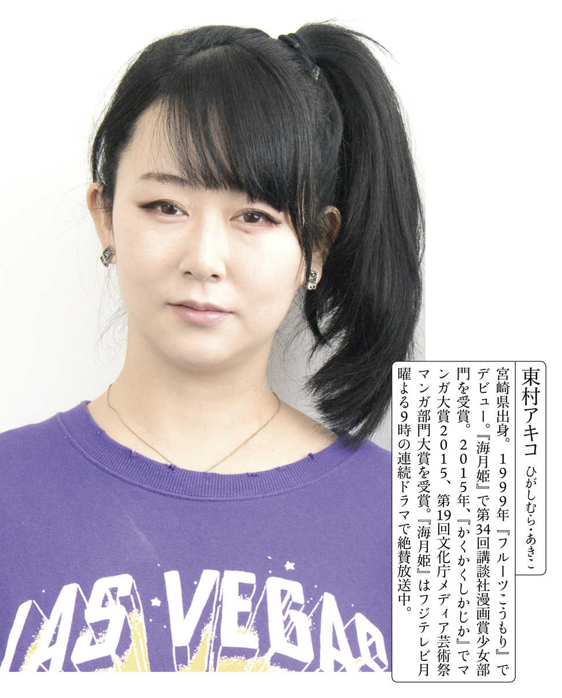

| 小説現代３月号『大特集 本を造る！』 | |
| Unknown | |
| 講談社 (2018) | |

設定にひとひねり入れたお仕事小説を得意とする安 藤 祐 介 が、真正面から、印刷会社を題材に採 り上げた『本のエンドロール』（三月七日発売）。営業、工場作業員、ＤＴＰオペレーター、デザイナー、電子書籍製作チーム......。奥付（エンドロール）には載らない本造りの裏方達の群像劇を、出版不況の実状とともに連作形式で描き出していく。本作のため、作家が取材攻勢をかけた印刷会社は、豊 国 印 刷 だ。豊国と言えば、マンガ家の東 村 アキコだ（理由は本文を参照のこと）。代表作『海月 姫 』は月９でドラマ化され、「上 杉 謙 信 は女だった」という仮説を元に描いた『雪 花 の虎』をはじめ、現在は四作のマンガを同時連載中。豊国繫がりの二人が、本にまつわる本音を語り合った。
安藤 東村さんの『かくかくしかじか』を、今年の一月二日に読んだんです。美術教室の日 高 先生が、高校生だった東村さんに対して「いいから描けーーーッ」と叫ぶじゃないですか。ちょっとでもサボろうとすると、「いいから描けーーーッ」と。正月休みはもう少しダラダラするつもりだったんですが、「自分も小説を書かねば！」と、仕事始めのきっかけになりました。
東村 私のマンガ、読んでくださったんですね。
安藤 『雪花の虎』と『ひまわりっ』それから『東京タラレバ娘』や『ママはテンパリスト』、『美食探偵 明智五郎』も読ませていただきました。『海月姫』はマンガも読んで、ドラマも拝見しています。
東村 めちゃめちゃ読んでるじゃないですか！ 私も安藤さんの『本のエンドロール』、読ませていただきました。面白かったです。印刷会社の仕事について、この小説を読んで初めて知りましたってなる人も多いと思うんですよ。かっこいいですよね。
安藤 かっこいい仕事です！
──本日は、豊国印刷の会議室での対談となっています。東村さんは以前、豊国印刷のオフィシャルキャラクター「トヨクニくん」「豊 国 子 さん」を描き下ろされました。安藤さんは『本のエンドロール』の執筆にあたって、豊国印刷に取材を敢行されたそうですね。
安藤 全面協力していただきました。こちらの社屋にも、何度となくお邪魔させてもらっています。
東村 読めばすぐ分かりますけど、小説に出てくる印刷会社って、豊国がモデルですよね。
安藤 最初のきっかけとしては、編集さんから「本が実際にどうやって作られているか、意外に作家さんは知らないんですよね」と言われたんです。確かに知らないな、と。その場でちょっとお話を伺ってみたら、すごく面白かったんですよ。「豊国印刷だったら講談社とも縁が深いので、がっちり取材ができると思います」というお誘いをいただいて、本造りの話を書くことに決めたのがもう、三年近く前です。そこからずっと取材して書いて、取材して書いての繰り返しでした。
東村 私てっきり、豊国でバイトとかしたことある人が書いたのかなと思ったんですよ。読んだ時にすごく豊国の感じが出ていたので。
安藤 嬉しいです（笑）。リアリティを感じてくださったということですよね。
東村 そうそう。私もね、豊国には何回も来てるんですよ。
安藤 『ひまわりっ』のおまけマンガに描かれていましたよね。きっかけは豊国の「小 池 さん」。
東村 講談社のパーティーに行ったら小池さんに酔って絡まれて、「締め切りをぶっちぎる作家のせいで俺らがどんだけ大変な思いをしているか、見学に来い！」っつって。後で聞いたら、パーティーに来た漫画家みんなに言ってたらしいんですよ。馬鹿正直に見学しに行ったのは私だけだったんです。断れない気迫があったんですよ、小池さんに。勉強になるかなぁと思って行った、とかでもないですよ。ただただ気迫がものすごくって、ホントに見て欲しいんだなって思ったんですよね。だから、受けて立たなきゃと思ったんです。
安藤 僕も最初の取材は、本が造られる工程を見学することでした。本社でＤＴＰのオペレーターの方の仕事を見て、印刷工場を見て製本所まで見せていただいて。東村さんがこちらに来られた時は、どんなコースで？
東村 まず、入口で小池さんが腕組みして待ち構えていて。
一同 （笑）。
東村 中に入ると、各工程に一人、豊国の方が待ち構えてるわけですよ。「このエリアのボスは俺だ。俺を倒すまで先へ行かせん」みたいな感じで立っていて、その人のところで説明を聞いたり作業を見学したら、「次はあの人のところへ行ってください」って指示が出る。また別のボスのところへ行って説明を聞いてってずうっとやっていって、最後に社長室に着いたら、社長が机の上で腕を組んで、大ボスの雰囲気で待っているんですよ。「何この会社!? 」と思って。
安藤 前任の吉 井 （順 一 ）社長ですね。僕も廣 田 （浩 二 ）社長にお世話になりました。たくさん応援していただきました。
東村 結果的に、ものすごく勉強になりましたけどね。漫画家ってたいてい、締め切りを破るじゃないですか。「雑誌の発売日までまだ○日あるでしょ」みたいな感じで、「ぱぱっと写植貼って刷 ってくれればいいじゃん」って思ってるふしがある。でも、漫画家が原稿を渡した後に、こんなに丁寧にやらなきゃいけない工程がいっぱいあるってことは、それは時間かかるなと思ったんです。
安藤 締め切りには遅れちゃいけないんだな、と。
東村 そこを叩き込まれましたね。しかも、担当編集とかには感謝の気持ちを伝えられるじゃないですか。締め切りの後にご飯を食べに行ったりする機会もあるし、ヒットしたお礼にスカーフの一枚でもプレゼントしよう、みたいなこともある。でも、豊国の人には普段会わないから、お礼を言う機会もないんですよ。すっごいお世話になっているのに、会わずに、お礼も言わないまま過ごしていたんだなって衝撃は大きかったです。本を書いている人は全員、一回見学に来たほうがいいと思いますね。
安藤 僕もそう思います。本を出す、ということへの気持ちが変わると思いますね。
みんなが少しずつ無理をして少しでもいいものを
──安藤さんは『営 業 零 課 接 待 班 』など、営業マンを主要人物に据えた小説を書かれています。本作でも印刷会社の営業マン・浦 本 学 が主要人物の一人ですが、取材を通して他業種との「営業」の違いは感じましたか？
安藤 一般的な「営業」のイメージとはまったく違いました。商品を売りに行って契約を取る、というものではないし、ルートセールス（※定期的に得意先を訪問する営業スタイル）ともまた違うんです。「作る」の部分にまで入っていく、プロジェクトマネージャーみたいな感じなのかな、と。本造りのいろいろな工程を調整したり。
東村 工程調整はでかいですよね。
安藤 出版界を題材にしたお話って幾つもあるんですが、編集者の仕事までを描いたものは多いんです。でも、その先の印刷とか製本、造本の部分まで描いたお話ってほとんどなくて。印刷営業の人が、物語の登場人物になることはなかったんですよ。そこを書けば新しい切り口になるぞ、と思いました。
──さきほど名刺交換をさせていただいたんですが、小池さんは営業なんですよね。
東村 えっ、小池さんって営業なの!?
安藤 僕もさきほどご挨 拶 させていただいたんですが、名刺には営業の部署名が書いてありました（笑）。
東村 めっちゃ深く本作りに関わってるやん!! 編集さんはみんな、小池さん頼みなんですよ。仕事的にはスーパーマンなんです。最高に仕事ができるんですよ。ただね、酒癖が悪い。
安藤 東村さんは、校了の時に赤を入れられたことってありますか？
東村 校了紙の時ってこと？ そんなの、マンガ家なんて全員ですよ。真っ赤にしてる人もいますよね。セリフを全部直したり、とか。
安藤 全部ですか!?
東村 マンガ家ってアホなんですよ。子供だからねぇ、調べないで書いたりとか、使っちゃいけない言葉使ったりとか平気でやるから。それを全部、豊国さんたちがチェックして、まずいところがあったら直しを入れて。
安藤 そういったトラブル、綱渡りのスケジュールを繫いでいるのが、営業さんですよね。人と人とを繫ぐ立場ですから、いろんな部署とも関わりがあって。だから主人公の一人にしようと思ったんですけど、せっかく本造りがテーマの話なので、工場の人の視点と、ＤＴＰの人の視点もそれぞれ入れてみようかなと思ったんです。最初は自分の力量でできるかなと不安もあったんですが、各部署のみなさんにもお話を伺うことができて、なんとか書きあがりました。
東村 みんながルールをはみ出した部分で、サービスっていうか......人情ですよね。人情でみんなが少しずつ無理をして、少しでもいいものを作ろうとしているって姿は、この本を読んでいていいなあって思いましたね。
──利益ではないところで、手を繫いでいる姿が感動的でした。
東村 これ、『下町ロケット』チームでドラマにしてもらえばいいじゃないですか。読んだ時に、ぴったりだなと思いましたよ。
安藤 していただけるなら、ぜひ！（笑） 「今はフリーランスの時代で、会社で働くなんて終わってる」みたいなことを言う人もいるんですけど、会社で働くことの楽しさってあると思うんですね。チームワークを発 揮 する楽しさ、というか。そこもこの作品で書きたいな、と思ったことのひとつでした。
東村 私もね、出社したい派だからその感覚は分かりますよ。漫画家って自宅を仕事場にする人も多いんですけど、私は自宅と仕事場を絶対変えたい派。今は紙じゃなくて全部デジタルで描いているので、ネットで繫げばアシスタントさんに自分の家で仕事してもらうこともできるんですね。でも、ひとつの場所にみんなで集まって「えいっ！」とやらないと、グルーヴみたいなものが出ないと思うんですよ。
安藤 マンガ家の方って、チームでやられている方が多いですよね。
東村 チームありきの業界だと思いますね。アシスタントと師弟関係っぽくなって、職人さんの工房みたいに作るところがあるから、激務でもなんとか乗り切れる。
安藤 東村さんは今、連載って何本お持ちなんですか？
東村 四本です。月に八回締め切りが来る計算ですね。平均で週二本って感じです。長いページの締め切りの時は、多い時で一六人とか仕事場に来て、一日で一気に仕上げちゃいます。
安藤 まさにその「チームで描く」っていうところが、マンガ家さんはうらやましいなぁと思うところなんです。小説って一人で書くものなので、孤独で心が折れそうになることがあります（笑）。でも、今回は一人で書いている感じがしなかったんですね。気になることがあったら豊国さんに連絡を取って、技術監修みたいな感じでいろいろ教えていただけましたし、わざわざ調べていただいたりもして。豊国のみなさんがすごく応援もしてくださったんですよ。編集さんも含め、チームを組んで書いている感覚があったんです。
電子に対する複雑な思い 紙の本は「宝物」で「宝箱」
東村 本もどんどん、電子書籍で読まれるようになってきたじゃないですか。私自身もわりと電子で、スマホで読んでるんですね。「やっぱり紙じゃないと」みたいな考え方は、私的にはないんですけど、どうですか安藤さん的には。
安藤 電子は実用書みたいなものを読むにはいいんです。でも、小説は紙で読みたいなって思うんですよ。感覚的なものなのかなと思うんですが......。マンガはどうなんでしょうか。小説よりも、電子で読んでいる人は多いのかなという印象があります。
東村 多いですね。マンガは読み捨てって言ったら感じが悪いですけど、暇つぶしの要素が小説より強いと思うので、電子で読んでもらっても全然大丈夫だと思うんです。「早く全部電子に移行してくれないかな」って言ってる漫画家も、結構いたりする。マンガ業界はこの数年で、紙にすがってる感じが薄まってきた気はします。「紙の本がなくなったら寂しい」って、実際は読者の方が思っている可能性はありますよね。
──『本のエンドロール』では紙の本へのこだわりと同時に、電子書籍に関しても積極的に、肯定的に記されていた印象があります。
安藤
一歩踏み込んだものを書きたいなと思っていました。紙じゃなければどうしてもダメって感じじゃなくて、電子書籍にもいいところがある、例えば......持ち運びが便利だったり暗い場所でもバックライトで読めたり。ただ、印刷会社の方に話を聞くと、みなさん複雑な思いを抱いてらっしゃるんだなと感じました。第四章では「紙 電子」の対決を書いたんですが、いち早く原稿を読んでくださった営業の方は「こんなもんじゃない。もっと葛
藤
しますよ」とおっしゃっていたんです。
電子」の対決を書いたんですが、いち早く原稿を読んでくださった営業の方は「こんなもんじゃない。もっと葛
藤
しますよ」とおっしゃっていたんです。
東村 私ね、普段読むのは電子なんですけど、紙の本も普通に買うんです。じゃあ紙の本では何を求めてるかっていうと、装丁が大事なんですよ。装丁がいいと買いたいと思うし、家に置いておきたいと思う。宝物みたいな本が、今後はより突出して売れていくんじゃないですかね。「宝物感」が大事だと思うんです。
──『本のエンドロール』の最終章のタイトルは、『本の宝箱』。電子書籍では表現できない、紙の本の「宝箱」としての物質感を巡るお話でした。「宝物感」と共鳴していますね。
東村 そうなの、びっくりして。安藤さんが読んでくださった『かくかくしかじか』って、大判サイズなんですね。普通の少女マンガのコミックスと、サイズが違うんです。他のマンガはそれでいいけど、『かくかくしかじか』だけは大判にしてくれって頼んだんですよ。編集さんからは「大判にしたら値段が倍になるから売れなくなる」って反対されたんですけど、「大判で出すことで、宝物感が出るから」と言って説得したんです。
安藤 大判にしたほうがいいというのは、直感だったんですか？ それとも、何か理由がおありになったのでしょうか。
東村 内容とそのサイズが合ってるって思ったんです。例えば『海月姫』は小さいサイズが合ってると思うんですよ。でも、『かくかくしかじか』を小さいサイズで出したら逆に、買ってもらえない気がしたんですよね。私にとって宝物みたいな思い出を描いたものだし、流行とかに関係なく長く読まれる可能性がある作品だから、これだけは大判にしようって。と言いつつ、最初は売れなかったんですよ。そりゃあね、高いから。そのうち売れるでしょとか言ってたら、「マンガ大賞」をもらってバンッと売上げが跳ねて。連載が終わって三年経った今でも、ずっと読んでもらえる作品になったんです。
安藤 僕の本はしばらくずっと、ソフトカバーで出ていたんです。でも、今回はデビュー作以来一〇年ぶりのハードカバーなんですね。その装丁にすることは編集さんが決めてくださったんですが、たぶん「宝物感」を出したかったんだなあと、今お話を伺いながら感じました。
廃れていくのはしょうがない 悲観していてもしょうがない
東村 安藤さん、いい大学出てるんだから、テレビでコメンテーターとかやればいいのに。
安藤 えっ!?
東村 私ね、二〇代の頃に、大先輩の槇 村 さとる先生とパーティーでお会いして、アドバイスをいただいたんですよ。マンガ家ってあんまり「顔出し」をしてないんです。私もマンガだけで勝負するぞと思っていたから、表に出て行くつもりはなかった。でも、槇村先生が「これからは作家にファンが付かないと、お金を払ってマンガを買ってくれない時代が来るからね」と。「あなた自身のファンの人が、あなたが描いたものにお金を出して買ってくれる。だからどんどん顔出しをして、恥ずかしがらずにどんどん人前に出て顔を売って、インタビューとかも受けてメディアに出て行ってってやらないとダメだからね」と言われたんです。言う通りにしてみようと思ったんですよ。それからインタビューとかも受けるようになって、顔出しもして。でね、私本人のファンが付くと、やっぱりその人たちは立ち読みしないんですよ。買ってくれる。強固な絆ができるんです。それは宝っていうか武器っていうか、「私はこの世界で残っていける」と思えるぐらい強いものなんですよね。
安藤 メディアを通して拝見するお姿もそうですし、本の中にも東村さんのお人柄が出ていますよね。主人公の名前が「アキコ」で、ご本人っていう作品も多いですし、コミックス巻末のおまけマンガに作者として登場されるじゃないですか。
東村 おまけマンガって、何ページ描こうがノーギャラなんですよ。
安藤 ええっ!?
東村 これ、マンガ出版界豆知識です。でもね、私はおまけマンガでここまで来たんです。『ひまわりっ』ってマンガは元々、少女マンガのコミックスに描いたおまけだったんですよ。本編は普通に女の子たちが出てくるマンガなのに、おまけで自分の父親のことを描いたら、面白いからもっと描いてよって。それを青年誌で週刊連載することになって、私のマンガを読んでくれる人が一気に増えたんです。だからおまけは、止められないわけよ。おまけが読みたいから、ファンは私の本を買っている。おまけがないと、サイン会でブチ切れられるくらいなんですよ。
安藤 おまけマンガでは、涙をボロボロ流して「お買い上げいただきありがとうございます！」と言っている東村さんの絵も印象に残っています。
東村 何回描くんだその絵を、と。でもまぁね、何回でも言うんだって感じで。タダなのに描き続けてきた二〇年ですよ。この間数えたら、おまけだけで二〇〇ページぐらいは描いている。トータルで一冊分ぐらいは描いてますよ。
安藤 僕も今後、あとがきを書く機会があったら、東村さんのおもてなしの心を思い出します（笑）。
──『本のエンドロール』には「謝辞」という形で、本編の後に二ページの文章が掲載されていますよね。
安藤 この本に関わってくださったみなさんへの感謝の気持ちを、本の中にどうしても残しておきたかったんです。読者さんに「本のエンドロール」を、本当に見せたいという気持ちもありました。実は、僕もついさっき拝見したんですが、謝辞の後に、編集さんが本物のエンドロールを付けてくださったんですよ。これなんですけど（と、エンドロールの刷り出しを見せる）。
東村 黒地に白抜きの文字で。かっこいいですね！
──『本のエンドロール』では出版不況も採り上げられています。「本が売れない」と言われる現状に対して、お二人はどんなことを考えていますか？
東村 こんなことを言うと申し訳ないんですけど、私は高校大学生までは全部、立ち読みでマンガを読んでいたんです。あとは借りるか、友達の家に行って読むか。自分の家にあるマンガは『タッチ』の九巻しかなかったんですよね。ちっちゃい頃は小説をずっと読んでたんですけど、それも図書館で片 っ端 から借りて読んでいたんですよ。
安藤 僕も子どもの頃、図書館が大好きでした。
東村 お小遣いはほぼファミコンのソフトに使ってたんですよ。そう考えると、言われてることは今も昔も一緒なんですよね。「ゲームにばかりお金を使って、本を買ってくれない」とか出版社の人は嘆 くけど、「自分らも子どもの頃はどうだったよ？」と。古本、貸本、漫画喫茶とかもあるわけで。
安藤 大学で金沢へ行った時、古書店でバイトされていたって『かくかくしかじか』で描かれていましたよね。
東村 そうそう。そこで店番をしながらシッチャカメッチャカ、いろんなジャンルのマンガを読んでいたんです。今思えば古本屋なんて、出版社にとっては敵ですよね。でも、そうやっていろんなジャンルの本を読んでいたのが良かったと思っているんです。もしも「本は買わなきゃダメ」ってルールを守っていたら、本当に好きな少女マンガしか買わないから、私はマンガ家にはなれなかった。少なくとも、今描いているようなマンガにはならなかったですよ。だから私は「買って読んでくれなくても、文句は言えません」というスタンス。
安藤 僕もつい最近、行きつけの美容室でずっと読んでいた『バガボンド』を、最新刊まで読破しました。
東村 そうでしょ？ 歯医者さんに行くと『ドラえもん』なんかがあって、ラーメン屋さんには『静かなるドン』が全巻あったじゃないですか。名作をタダで読めるって状況があるのに、「いや、本は買って読むものですから」なんて言えないでしょ。面白かったら、友達には貸すじゃん。「この本めっちゃ面白かったんだよね！ でも、買って読んでね」なんておかしいでしょ。
安藤 さっき東村さんがおっしゃったゲームはもちろん、今はいろんな娯楽がありますよね。スマホもありますし、本を読む時間は絶対的に少なくなっている。そこは必然的にしょうがないのかなって思いはありますけれど、きっとまだ試していないだけで、本を売る、本を届けるためのいろいろなアプローチはあるのかなと思うんです。
──作中に「考えるべきは『どうなるか』ではなく『どうするか』だ」という台詞が出てきましたよね。出版界の未来についてはおいおい考えることとして、目の前の状況をどう改善し、どうやって目の前の仕事をいいものにするかに没頭して、具体的な行動をしよう、と。
東村 あそこ、良かったですよねぇ。悲観的にはなってないじゃないですか。そこがかっこよかったですよ。
安藤 ありがとうございます。この小説を書いていて思ったのは、生まれて最初に触れた本が紙だったから、「電子より紙の本がいい」という人は少なくないんじゃないのかな、と。だとしたら、物心がついた頃から電子端末を触っていて、初めて触れた本は電子書籍だったという人が増えていったら、状況は変わって行かざるを得ない。紙の本が少しずつ廃れていくのはしょうがない、でもそのことを悲観していてもしょうがない。状況の変化に対応していかなければいけないのかなと、思いますね。
東村 本を買わないと「出版社が、印刷会社が潰れる」っていいますけど、出版社が、紙以外のもので儲けを出せるようになっていけばいいと思う。安藤さんも書いてましたけど、紙の本がなくなっても、なくなったらなくなったなりのやり方があるんですよね。
タダでもいいから読んでもらってファンになってもらうのが一番！
東村 じゃあさ、安藤さんのファンになってもらえるように、安藤さんの面白さが出てくる話をしたほうがいいね。なんで小説家になろうと思ったんですか？ だってめっちゃエリートでしょう。早 稲 田 の政経でしょ。
安藤 書くことが好きだったので、最初はコピーライターとか、インタビュー記事を書くライターをやりたいと思って就職活動をしていたんです。新卒で就職したのは結局、小さな塾の講師としてだったんですが、そこが典型的なブラック企業で。コピー用紙は全部自腹で持ち込みだったんですよ。生徒に配る教材のコピーも、自分で買って持ち込んだ紙を使うんです。「コスト感覚を身に付けるための自己投資だ」というヘンな理屈で。
東村 何それケチ臭 っ！（笑）
安藤 それで、お酒の業界新聞に転職したんです。そこで三ヵ月ばかり記者やったんですけど、クビになりまして......。
東村 なんでクビになったんですか？
安藤 なんででしょう？ 使えなかった、というのはあるんでしょうけど、お酒が好きすぎたのかもしれません。泡盛フェスティバルみたいなところへ取材に行くと、試飲ができるんですよ。普通の記者の方はぐいっとお酒をあおって喉まで入れた後で、飲まずに外へ出すんです。いろんな種類を飲んで違いを書かなければいけないわけで、飲むと酔っちゃいますから。でも、私は全部飲んじゃうんです。で、何書いてるか分からなくなっちゃうっていう。
東村 だからクビになったんですよ（笑）。
安藤 クビになって落ち込んでいる時に、高校時代からの友達が「そんなに書くのが好きなんだったら、小説を書けばいいじゃん。小説だったら何でも書けるじゃん」って。その一言がきっかけだったんですよね。
東村 来た来た！ 聞きたいエピソードが来ました。
安藤 小説なんて自分に書けるのかなぁと思いつつ、その一言がきっかけでやり始めたら一応、形らしいものができたんです。その後もう一作書いて「ドラマ原作大賞」という新人賞に投稿して、賞をいただいてデビューすることになったんですね。
東村 私も同じような経験があって。『かくかくしかじか』でも描いたんですけど、美大の四年の時に「マンガ家になりたいんだよねえ」って、誰にも言ってなかった自分の夢をぽろっと、同級生に喋 っちゃった時があったんですね。その人とはそんなに親しいわけじゃなかったんだけど、「ええやん！ 絶対いけるで！」って。
安藤 そのシーン、僕もすごく印象に残っていました。
東村 「どうせ無理やろ」とか「なれるわけないやん」みたいなことを言われていたら、夢に向かう気持ちが落ちちゃったかもしれないじゃないですか。あの時の「ええやん！」って言葉があったから、今の自分がいる気がするんですよね。
──そろそろ終了の時間が来てしまいました。最後に、小説とマンガという垣根を越えて、出版人としての共同声明を出していただくとしたら、どんなものになりそうですか？
東村 「本を読んで面白かったら、人に貸す。人にオススメされた本は、いちいち買わなくてもいい！」。
安藤 そ、そうですね（笑）。誰かに貸すためのことも考えて、まずは一冊買っていただければ、と......。
東村 まあね、今回の本に関しては、せっかく本を造る人の裏側を見せた小説を、ハードカバーで造ったんだから。ハードカバーの重みを感じながら読んでほしいですよね。と言いつつ、「読んでもらうのが一番、という気持ちでやっております!! 」と。そのほうがさ、印象がいいやん？
一同 （笑）。
東村 よくＴｗｉｔｔｅｒで作家さんがね、「この本を作るためにはこれくらいコストがかかっているんです」とか言うけど、読むほうにしたら関係ないじゃないですか。
安藤 確かに。この本は立ち上げから三年かかっているんですが、読者にとっては三年かかっていようが、一日で書いていようが関係ないですよね。
東村 そうそう。好感度作家で行きましょう。気前の良さがこれからは大事！ 細かいことにめくじら立てない！ タダでもいいから読んでもらって、ファンになってもらうのが一番いいと思うんですよ。
安藤 乗っからせていただきます（笑）。今日は本当にありがとうございました！
プロローグ
「夢をお聞かせいただきたいのですが」
質問に立った女子学生は、両手でマイクを握り締め、緊張した面 持 ちで訊ねた。
豊 澄 印刷株式会社営業第二部のトップセールス・仲 井 戸 光 二 は座ったままマイクを手に取った。
「夢は、目の前の仕事を毎日、手違いなく終わらせることです」
真新しいスーツに身を包んだ学生たちに、戸惑いの表情が浮かぶ。
仲井戸の隣で、浦 本 学 は膝の上に載 せた拳を握り締めた。
間もなく社会へ出ようとする就活生を前に、この回答はあんまりだ。夢も希望もない。
「そういった日々の心構えの他に、将来の夢などについてお聞かせいただけたら......」
質問者の女子学生がマイクを通して食い下がった。
「私たちの仕事は印刷業です。注文された仕様を忠実に再現する仕事。夢は何かと訊 かれて、強 いて言うなら今お答えしたとおり、目の前の仕事を毎日、手違いなく終わらせることです」
仲井戸はそう答えて、マイクを浦本に差し出した。
会社説明会の司会を務める人事部の広 野 麻 衣 と目が合った。採用担当のベテランだが、仲井戸の回答に困惑の色を隠せない。
この気まずい雰囲気を払 拭 しなければならない。
「仲井戸と同じ営業第二部で主に文芸書を担当しております、浦本と申します」
浦本は頭をフル回転させ、挽回のコメントを考えた。
「私の夢は......印刷がものづくりとして認められる日が来ることです」
話しながら、就活生たちに少しでも夢を感じてもらえる言葉を、頭の中で模索する。
「本を刷るのではなく、本を造るのが私たちの仕事です」
言葉につられて、気持ちが熱を帯びる。
「印刷会社は......豊澄印刷は、メーカーなんです」
思ってもみなかった言葉が口を衝いて出た。何人かの学生がペンを走らせる。
「作家さんが原稿を書き、編集者さんが出版の企画を立て、デザイナーさんと相談されて本の仕様が決まります。それを弊 社 のような印刷会社が製品化します。物語が完成しただけでは、本はできない。印刷会社や製本会社が本を造るのです」
印刷会社はメーカーだ。
日頃から漠然と抱いていた使命感のようなものが、初めて言語化された。
「精魂込めて書かれた物語を本というカタチにするのが私たちの使命です。仲井戸も申し上げましたとおり、手違いは絶対に許されない、夢と責任のある仕事です」
司会席の広野と目が合った。彼女はにっこり笑いながら大きく頷いた。
「はい、それでは、他にご質問のある方」
男子学生が手を上げた。自信ありげな立 ち居 振 る舞 い。サークルでリーダーを張っていそうなタイプだ。
「浦本さんの『印刷会社はメーカーだ』というお話にすごく共感しました。これに対して仲井戸さんは、どのようにお考えですか」
男子学生は挑戦的な眼 差 しで仲井戸に問いかけた。
仲井戸は眉ひとつ動かさずマイクを手にとる。
「私は違うと思います」
ざわめいた。
「印刷会社はあくまで印刷会社です。メーカーではありません」
浦本は硬 直 した。シャツの下に脂 汗 が滲 む。
「では『印刷はものづくりではない』という理解でよろしいでしょうか」
「はい。文芸作品の中身を作っているのは作家や編集者です。私たちは、それを書籍という大量生産可能な形式に落とし込み、世の中へ供給するための作業工程を請け負っています。その作業工程におけるプロとしての立場に徹 するべきです」
他にご質問は？ 広野が促しても、もう学生たちからの質問は出なかった。
学生たちが退出し、会議室には社員だけが残った。戻り支度をする仲井戸に広野が詰め寄った。
「仲井戸さん、どういう意図であのようなコメントを」
豊澄印刷は今年、新卒採用にいつになく力を入れている。三人は採用する予定だと聞いた。
今回の採用から解禁月の三月にいち早く会社説明会を開催、内容も大幅に刷 新 したのだった。文京区音 羽 の本社を見学した後、バスで埼玉のふじみ野工場へ移動。最後に工場の会議室で各部署の先輩社員が日頃の業務について語り、学生からの質問に答える。
手間もコストもかかるが、これも就活生に会社のことを知ってもらうための努力だ。
「せっかく説明会に参加してくれた学生さんたちに対して、不誠実じゃないですか」
「本心を言ったまでです。実情にそぐわないことを思い付きで述べるほうが不誠実でしょう」
仲井戸は浦本に目を遣 りながら言った。
「思い付きではありません」
「浦本君から『印刷会社はメーカーだ』なんて矜 持 は聞いたことがなかったけど」
「確かに言ったことはありませんでしたし、頭の中でも言語化されていませんでしたよ。でも、咄 嗟 に口に出して、これが自分の思っていたことだと分かったんです」
印刷会社は決められたものを刷って複製するだけではない。
物語に〝本〟という身体を授 け、お似合いの服を着せて世に送り出すのだ。
「仲井戸さんの仰ることは、間違っていません。ただ夢とはいわないまでも、学生さんたちに使命のようなものは伝えられるのではないでしょうか」
「印刷機の稼働率を上げることが、営業の使命だろう。受注を切らさないこと、社員約二百人が食べていくために何をすべきかを考えるのが最優先ではないのか」
逐 一 正論だ。だがすんなり受け入れられない。
「それにもっとシビアな話、この先本が売れなくなるのは火を見るより明らかで、印刷業界は客観的に見れば斜 陽 産業、沈みかけた船だ」
広野麻衣が「言い過ぎではないですか」と諫 めるが、仲井戸は淡々と続ける。
「下手な希望を持って入ってくる新規採用者は、長続きしませんよ。止めておいたほうがいい」
本が売れなくなっていることなど分かっている。それでも、浦本は本造りに携 わりたくて豊澄印刷を選んだ。
「じゃあ仲井戸さんは、なぜ沈みかけた船に乗っているんですか」
「沈ませないためだよ」
トップセールスである仲井戸の言葉には、説得力がある。
でも夢は目の前の仕事を手違いなく終わらせることだと言い切ってしまったら、寂しすぎはしないか。本のため、あるいは本を読む人や本造りに携わる人のために印刷会社ができることは、まだまだあるのではないか。
証明する手段はひとつ。仕事で仲井戸を超えるしかない。
第一章 『スロウスタート』
「手一杯なのは承知の上で、頼む。お願いします」
浦本は携帯電話を耳に当てたまま頭を下げた。電話の相手はふじみ野工場の印刷製造部係長、野 末 正 義 。
野末は入社十一年目、堅実な仕事ぶりで昨年から実作業の統括を任せられている。
〈生産管理部を通して作業依頼してくれ〉
「もちろん、生産管理部には話を通す。追ってそちらへ電話が入ると思う。ただ、営業からも重ねて思いを伝えておきたくて......」
〈到底無理だな〉
浦本が頼み込んでいるのは特色印刷の割り込み作業だ。
通常、色はプロセスインキと呼ばれるＣ（シアン）、Ｍ（マゼンタ）、Ｙ（イエロー）、Ｋ（ブラック）の四色を刷り重ねて表現される。
一方で、ＣＭＹＫの刷り重ねで表現しきれない色は特色と呼ばれ、職人の手によってインキや金・銀・パールの金属粉などを混ぜ合わせて作られる。
「お願いします、同期のよしみで」
中途入社の浦本は社歴三年目だが、年齢は同じ三十二歳。勝手に同期ということにしてある。
〈得意先のよしみで、調子よく無理難題を引き受けてくる営業に、付き合う義理はない〉
野末の語尾に冷笑が混じる。
営業が仕事を取ってくるから印刷機が稼働するのではないか。憤 る気持ちをぐっと抑える。
こちらは昼夜を問わず、顧客との打合せや電話に追いまくられている。
今回の一件も顧客の東 都 書 房 となんとか調整した結果の、ギリギリのラインなのだ。
東都書房から刊行されるビジネス書『自分探し病を克服する八つの方法』の印刷を控え、先方が急 遽 カバーの題字に特色を使いたいと言い出した。
〈もう下 版 済みだぞ。印刷機は明後日の午後一時で押さえてある。待ったなしだ〉
手書きやワープロで書かれた原稿は、編集者から印刷会社へ送られ、本のレイアウトに組み替えられる。印刷会社がゲラ刷りと呼ばれる校正紙を出し、出版社の校閲部や著者による校正を経て校了となる。校了したデータを印刷工場へ送ってアルミ製の板に焼き付けて刷 版 を作成した上で印刷にかける。
下版済みということは刷版を作り終え、印刷を待つばかりの状態。割り込みの追加作業を入れるのは危険だ。
「分かってる。分かった上で、なんとかしてもらえないか」
〈取 次 への搬入をずらせば済む話だ〉
「申し訳ない。取次への搬入は既に発売日の一日前に延ばしてある......」
印刷・製本された書籍や雑誌は一度、出版取次会社の物流倉庫に搬入され、全国の書店へと散ってゆく。取次は文字通り出版社と書店の間を取り次ぐ、いわば本の卸売問屋の役割を果たす。
通常、取次には発売日の五日前を目 処 に搬入される。この五日間をスケジュールの調整弁にすればよいという訳だ。
だが今回、既にその手は使ってしまっている。カバーに使うアート紙が国内の代理店には在庫僅 少 のため海外から取り寄せなければならず、その上発送時のトラブルも重なり納品に時間がかかったのだ。発売日の五日前に印刷、二日前に製本、一日前に取次搬入という最短スケジュールを組んであった。
〈発売日を一日、二日ずらすよう交渉するのが先だろう〉
「散々交渉したよ。でもダメだからお願いしているんだ。先方の担当さんも、お偉いさんたちから色々口出しされて、板挟みになってるから、うちがなんとかしてあげないと」
〈八方塞 がりか。どうしようもないな〉
野末は忌 々 しげに吐き捨てた。
「そうカリカリせずに、今度晩飯でも奢 るよ」
〈晩飯で手なずけられるような安い仕事なら、なおさらお断りだ〉
電話の向こうから正午のチャイムの音が聞こえてきた。
〈昼休みだ、切るぞ〉
電話は一方的に切れた。
おそらく弁当を持って休憩室へ向かったのだろう。
昼休みをとるのは当然の権利とはいえ、こんなにも一方的に電話を切られたら釈 然 としない。
「どうしたものか......」
浦本は携帯電話を切りながら溜息をついた。明日の夕方には先方の編集者に色校正を出し、確認を受けなければ間に合わない。
「困ったな......」
八方塞がりな状況に思わずまた独り言がこぼれた刹 那 、背後に人の気配を感じた。
「浦本さん、本当に困ります」
振り返ると生産管理部のリーダー、古 関 義 弘 がにこやかな表情で立っていた。
「今の電話、ふじみ野工場に直接作業依頼の話をしていましたね」
コミック、文芸、雑誌などの各営業担当がばらばらに工場へ作業を依頼すると、進 捗 管理に混乱をきたす。そのため生産管理部が管制塔となってスケジュール調整し、正式に作業指示を出す。
「お客様の思い、営業の思いを先に野末君に伝えた上で、古関さんを通して正式にお願いしようと思いまして......」
「なるほど。作業依頼ではなく、浦本さんの思いを伝えたということですね」
仏の古関という異名をとるこの男、怒ったところをほとんど見たことがない。
「そうです。古関さんからも工場に、対応してくれるよう営業の思いを伝えていただけませんか」
「思いは分かりました。ただ、思い通りにならないのが印刷工程です」
各部署からの主張に耳を傾け、しかしきっぱりと物を言う。営業と制作部門の間に立ってコントロールするのは生産管理部の仕事だ。
「午後一番で至急、ふじみ野工場に私から相談しますので」
通常の作業依頼であればむしろ、古関の力を頼ることが多い。しかし、一日を争う飛び込みの作業の場合はどうしても、正式ルートを通していては間に合わないという焦りが出てくる。営業としては居ても立ってもいられない。
情に訴えてでも、どうにかしてふじみ野工場で対応してもらわねばならない。
午後から埼玉でクライアントとの打合せが入っている。営業第二部は文芸書の他にチラシやポスターの案件も担当しており、埼玉のスーパーやタウン誌などとも取引がある。今日は和 光 市の地元大手スーパーで、キャンペーンポスターの打合せだ。
この打合せの前後で野末に直接会って話をしてみよう。
和光市のスーパーで打合せを済ませた浦本は、社用車でふじみ野工場へと向かった。
ふじみ野の市街地を離れると程なく水田地帯へと入る。あまり運転が得意でない浦本は、車の少ないこの辺りに差し掛かるといつもほっとする。
降り注ぐ春の陽射しで、運転席には熱がこもっていた。窓を開けると、汗ばんだ身体に心地よい風が吹いた。
アスファルト舗 装 の長い畦 道 を抜けた向こうにふじみ野工場がある。
受注した刊行物の八割以上を担う、豊澄印刷の心臓部だ。この心臓を止めぬように血液、すなわち仕事を送り込み、絶やさぬようにするのが営業部隊の使命だ。
「オーライ、オーライ」
用紙を積んだ四トントラックが敷地内の駐車場を旋回し、ゆっくりと搬入口へ向かう。
印刷作業を行う工場棟のすぐ脇に、事務所の入った管理棟が建っている。管理棟の引き戸を開けると、中に残っていたのは年配のオペレーター一人だけだった。
「おつかれさまです。野末君は作業中ですか」
「ああ、さっき出て行ったところだよ」
工場の建屋に入り、野末の姿を探す。カーキ色の作業着に身を包んだオペレーターたちが印刷機の前で次の印刷の準備を進めている。今日も印刷機は五台ともフル稼働。工場の慌ただしさを目にする度、本が売れなくなっているという現実を忘れそうになる。
印刷機は高さ二メートル強、給紙部（フィーダー部）から印刷部を経て排紙部まで、全長五メートルほどもある。誰がどこにいるのか探すのにもひと苦労だ。
一号機の傍 らで、若い大柄なオペレーターが四 六 判 の紙の束を抱えて持ち上げようと、四苦八苦していた。
「おい、無理するなって言ってるだろう！ 腰がいかれちまうぞ！」
一号機の機長を務める柴 田 が、若いオペレーターを叱 責 する。
「おつかれさまです」
浦本が声を掛けると、柴田は「おつかれ」と気の無い返事をした。
「彼、新人さんですか。頑張ってますね」
「あいつ、なんでか分からんが、無茶ばっかりするんだよ、まったく」
どうやら、一度に多くの紙を積もうと苦心しているようだ。
無茶をしたくなる気持ち、今の浦本には分かる。
無力感にさいなまれ、なんとかしようともがく時、つい無茶をしてしまう。寝食の時間をむやみに削って仕事したり、彼のように一枚でも多くの紙を持ち上げようと躍 起 になったり。
紙と言っても、コピー用紙などとは訳が違う。
文芸書で主に使われる四六判の紙は事務用机と同じぐらいの大きさ。
一連（千枚）だけでも腰が抜けるほどの重さになる。その紙がフォークリフト用のパレットの上にうずたかく積まれ、まるで紙の柱が直立しているように見える。印刷機の給紙部に用紙をセットする手積みの作業は、印刷オペレーターの誰もが通る基本作業だ。
「おい高 野 、早くしろ。日が暮れるぞ」
高野と呼ばれた新人オペレーターはもう一度紙の柱の前に立って両端をつかみ「よっ！」と力を入れた。紙が持ち上がった。だが次の瞬間、高野の手元で紙の束が命を得たように踊った。ぐにゃりと下へ谷形にたわみ、逆らう高野の手をあざ笑うかのように、今度は山なりにたわむ。反動で紙が雪崩 をうって滑り、床に散乱した。
「すみません！」
「だから言ったろう！」
高野は床に散らばった紙を慌てて拾い集め、二つに折り畳んでカゴに突っ込んだ。使えなくなった紙はヤレ紙と呼ばれ、廃棄の上リサイクルされる。
大人の胸元ほどもある大きなステンレス製の網カゴは、たちまちヤレ紙で一杯になった。
その時、印刷機の陰から、高野よりも一回り小柄な男が出てきた。
野末正義だ。
作業帽を少し斜 に被り、蟹 股 気味に歩くその姿からは、ふじみ野工場の実務を指揮する者の貫 禄 が滲み出ている。
「力任せに持ち上げようとしたって上手くいかない。見てろ」
野末は紙の両端をつかみ、パラパラと一枚ずつ親指で弾いて紙と紙の間に空気を入れてゆく。
紙の成分の約八％は水だ。そのため湿度や温度によって微妙に伸縮し、変質する。
春から夏にかけては湿度が上がるため、紙と紙が張り付きやすい。空気入れの作業が不十分なまま紙を給紙部に入れると、紙詰まりや、複数枚が張り付いて送られるダブリが起こりやすくなる。
野末はことも無げに紙の両端を持ち上げ、給紙部にセットした。
力のかけ方や紙の持ち方、腰の入れ方など、長年の経験で培ったコツがあるのだ。
「初めのうちは一度に多く持とうとするな」
「すみません」
高野が恐縮しながら悔しそうに顔をしかめる。
紙の手積みは重労働だ。腰をやられるオペレーターも少なくないと聞く。過去に手積みを自動化する機械も開発されたが精度が低く、普及していない。
「俺もコツが分かるまで三年はかかった。簡単な作業じゃない。焦らず丁寧に覚えてみろ」
営業マンには冷たい野末だが、部下の面倒見はよい。
「野末君」
自分の持ち場へ戻ってゆく野末を呼び止めようと、浦本は声を掛けた。聞こえていないのか、野末はさっさと歩いて行ってしまう。
無視しているというそぶりでもない。おそらく場内の機械音で、聞こえにくいのだろう。
今日の工場は全機フル稼働。
野末は五号機の次の印刷に向けて、刷版とブランケット胴をセットしている。
隣の四号機が印刷を開始した。片面三十二ページ、両面六十四ページ分の紙が次々と給紙部から送り出され、印刷部を通って排紙部へ吐き出される。
排紙部には空気のシャワーが絶えず流れ、印刷済みの紙面に、目に見えないパウダーを吹き付けている。とうもろこしなどの粉を原料とした微細なパウダーで重なり合う紙と紙の間に物理的な隙間を作り、インキのこすれや裏写りを防ぐ。
印刷機の稼働音の中、浦本は野末に近づいて「おつかれさま」と声をかけた。野末は横目で浦本をチラリと見て、ぶっきらぼうに言った。
「もうジロさんにお願いしてある」
特色作製の職人、ジロさんこと吉 崎 次 郎 のことだ。
浦本は五号機近くの壁際の作業台に、五十八歳の職人・ジロさんの背中を見つけた。
ジロさんはヘラを両手に一本ずつ持ち、ステンレス製の箱の中で二色のインキを練り合わせている。さらにもう一色追加した。
一本のヘラを両手で握って腰を落とし、力強くかき混ぜる。
ひたすらインキをかき混ぜるジロさん。背中から気迫が迸 る。
「生産管理部から午後のチャイムと同時に電話が来たよ」
古関と野末で相談して各印刷機のスケジュールを組み替え、作業を割り込ませたという。
「野末君、ありがとう」
「感謝されても困る。別にあんたを助けるためにやってる訳じゃない」
野末はオフセット枚葉印刷機と向き合ったまま作業の手を止めない。
「営業が請 けてしまったら、どんな無茶でもやるしかない。飯が食えなくなるからな」
浦本は「いつも感謝してますよ」とおどけた調子を滲ませながら返す。
「伝 書 鳩 だな」
野末は浦本には一 瞥 もくれず、大声で言った。
確かに「伝書鳩」と聞こえた。確かめるため、野末のすぐ側 まで近づいて訊き返す。
「伝書鳩？」
「そうだよ。今のあんたの仕事なら、鳩でもできる」
「ちょっと待ってくれ。さすがにそれは言い過ぎじゃないか」
普段から野末は浦本に対して素っ気ないが、今日はいつにも増して攻撃的だ。
「控えめに言って伝書鳩だ。あんたは無理な要求でも、お客様のお言葉をそのまま現場に伝えるだけ。いや、お客様の代弁者みたいな顔して押し付けてくる分、もっと性 質 が悪い。仲井戸さんなら、他の進行スケジュールを調整するなり、前 捌 きをしてから話を持ってくるぞ。あんたは生産管理部に泣きついただけだ」
仲井戸と比較されると、何も言い返せない。野末の言う通りだった。
仕事で仲井戸を超えたい。説明会での一件以来、浦本は強く意識するようになった。だがその背中はまだ遥か先にある。
「申し訳ない」
ここは作業を進めてもらうためにも、下手に出るほかない。
「印刷会社はメーカーだとか、会社説明会でうそぶいたらしいな」
先日の説明会の内容は、社内向けの掲示板に掲載されている。そこで浦本の発言を知り、癇 に障 ったらしい。
「うそぶいたつもりなんてない。本心から出た言葉だよ」
「本心ならば、改めてもらいたい」
頭ごなしに言われ、かっとなる気持ちを抑える。
それから「なぜ」と訊き返した。
「その理想にほだされたような浮ついた気持ちが、仕事ぶりにそのまんま表れてるからだよ」
「じゃあ、いいものを作りたいと思うことは、間違っていると？」
印刷機の稼働音に負けじと声を張るにつけ、気持ちも昂 ぶってくる。
「俺たちの仕事は、お客さんの注文どおりに〝ブツ〟としての本を仕上げることだ」
野末はパレットに棒積みされた印刷済の紙を指差しながら言った。大人の身長ほどはある紙の柱だ。「『駅 前 喫 茶 物 語 』一折目～八折目」と記されている。
「営業がどこまでもお客さんの仕様変更に付き合うと、現場が振り回される。お客さんの立場になって考えるのと、お客さんのわがままを言いなりで引き受けるのとは違う」
痛い所を突かれた。熱心な顧客ほど造本設計にこだわり、急な変更を言い出すこともある。無茶な場合は交渉して譲歩を引き出すのも営業の役目だが、浦本は顧客に肩入れする余り多くを引き受けてしまう節がある。
「あんたはお客さんの一員のようになって、現場に無理を押し付けてばかりだろう」
「現場、現場と言うけれど、営業だってお客さんと直に向き合っている。現場のひとつだ。現場と現場の間で右往左往してるんだ。少し協力してもらえないだろうか」
「十分協力してる。俺たちは、毎日の作業を事故なく済ませるだけで手一杯だ。一営業マンの個人的な情熱に振り回されている余裕はない」
〈目の前の仕事を毎日、手違いなく終わらせること〉
仲井戸が説明会で語った夢の話を思い出す。ひとつひとつの刊行物を無事に納品するのがどれだけ大変なことか。野末の言葉を聞くと、尚更思い知らされる。
「あんたも会社から給料もらって飯食ってるんだ。地に足つけて仕事したらどうだ」
その給料の元になる仕事は、営業が顧客との信頼を繫いで受注している。反論しようとしたその時、印刷機の陰から「野末さん」と呼ぶ声がした。
「五号機、『駅前喫茶物語』九折から十七折、セットＯＫです」
「了解。五号機、セットＯＫ、稼働してください」
オフセット印刷機が唸りを上げる。
「さっき話したとおり、割り込みの作業にはなんとか対応できている。どうかご安心くださいと、あんたの上司に報告しておいてくれ」
野末は、さも伝書鳩に伝言を託 すといった体で言った。
浦本は言いたいことを飲み込み、ふじみ野工場を後にした。
※
十六時、早番を終えた野末正義は作業着からジーンズとパーカーに着替え、更衣室を出た。
「お先」
遅番の佐 藤 に声を掛け、後を託す。佐藤は二十五歳の四年目社員。紙の手積みなどの基本作業から教え、最近ようやく現場を回せるようになってきた。今日は遅番の作業主任を初めて務める。
「野末さん、お疲れ様です。後は任せてください。刷版もブランケット胴も交換済み、インキも充 塡 済みです。紙も場内に搬入してありますので、あとは......」
佐藤は「任せてください」と言いつつ、矢 継 ぎ早 に準備の状況や後の段取りを説明してくる。暗に助言を請 うているのだろう。
「了解、任せた」
突き放す気持ちと、信頼する気持ちを両方込めた。
今日の遅番は売り出し中のミステリー作家・須 崎 譲 の『黙 秘 という名の自 白 』二万部の本文印刷だ。四百十六ページの重厚な作品で、作業量も増える。
だが後進の育成のためにも、具体的な指示や助言は出さずに任せることとした。
「おい、ムツゴロウ」
むっつりしているからムツゴロウ。この呼び方をするのは一人しかいない。
外階段下の喫煙スペースで、ジロさんが煙草を吹かしていた。流行らないあだ名を付けさせたらこの人の右に出るものはいない。
「相変わらずむっつりした顔してんなあ。眉 間 に皺 が寄ってるぞ」
「今日は、ありがとうございました。急な仕事をねじ込んですみません」
「気にすんな」
ジロさんはいつもの板ガムをポケットから取り出し「ほい」と野末に投げてよこした。反射的にキャッチする。
ブルーベリーのチューインガム。これでも嚙んで、ちょっと喋っていけという合図だ。
色を見極める印刷職人にとって、目は命。ジロさんは目に良いと言われるブルーベリーのガムを、願掛けのように常用している。
「営業のにいちゃん、だいぶ参ってたみたいだな」
「あれぐらい言わないと、彼は現場に甘えてなんでも安請け合いしてくるので」
野末はチューインガムの封を開け、口にねじ込んだ。
「でもなあ、あいつらが仕事を持ってきてくれなきゃ、俺たちだって飯が食えない」
「それは確かにそうですが......ここのところ、割を食うような仕事があまりに多い」
ジロさんと話すと、時々愚痴っぽくなってしまう。
「ところでよ、またワールドからお誘いの電話が来たよ」
印刷会社最大手・ワールド印刷が特色作製の職人を引き抜こうとしている。業界内では珍しい話ではないが、ジロさんのように明け透けに話す者はなかなかいない。
「お誘いに乗れば、給料は今の三割増だとよ。買い被られたもんだ」
そう言ってジロさんは煙草を吸い、煙を吐き出した。値上がりとともに煙草を止める者が多い中、ジロさんは「衣食住を削ってでも煙草だけは止めらんねえ」と公言している。
「で、ジロさんはどうするんですか？」
「美味い話は、信じねえ。あいつらが欲しがってるのは、機械のお手伝いさんだ」
ワールド印刷は特色の調合機を導入し、一定の機械化に成功した。だが機械では表現しきれない微妙な色調もあり、どうしても職人の技術が必要となってくる。
「機械の精度が上がった途 端 、俺は捨てられるさ」
「そんなことはないと思いますが」
「いや、信じねえ」
ジロさんは頑なな表情で首を振り、煙草の火をスタンドの灰皿の上で揉み消した。
「それに、四十年もここで働いてきて、今更他に移るのも面倒だ。お前だったらどうするよ」
「給料が上がるなら、迷わず移りますね。無茶な営業に振り回されることもなくなります」
野末は即答した。半ば冗談ではあったが、口に出してみると気持ちが揺らいだ。
「まあ、年々無茶な仕事が増えてるのは事実だがよ、時代は変われど、俺たち職人は来た球をきっちりと打ち返すだけよ」
俺たち職人。ジロさんの口癖だ。野末は職人という言葉に気後れしてしまう。野末が身につけたのは印刷機を適切に設定・操作し、色や濃度を確認し、仕様通りに印刷する技術だ。
一方のジロさんは、まさに職人と呼ぶにふさわしい。紙の材質、温度や湿度に応じてインキの成分や粘着性を見極め、特色を作り出す。印刷機を扱う責任者である野末も、インキや紙のイロハの多くをジロさんから学んだ。
「たまには酒でも飲んで、憂 さを晴らそうや」
「ありがとうございます。今日はお先に失礼します」
ジロさんの誘いを断り、家路を辿る。
酒は嫌いではないが、ここ二、三年でとんと飲まなくなった。
今日も会社から徒歩二十分の自宅へまっすぐ帰り、夕飯を食べる。
印刷機の急なトラブルがあっても自宅から急行できるよう、五年前にさいたま市内からふじみ野市のアパートに移った。
「おかえり！」
ドアを開けると、瓜 二つの男の子が二人、居間から声を上げた。幸 太 と陽 太 。双子の男の子だ。
「パパが作った本、ママに買ってもらったよ」
弟の陽太が嬉しそうに開いて見せたのは小学生向けの歴史漫画『織 田 信 長 』。豊澄印刷で印刷されている慶 談 社 の学習漫画だ。初版は一九八四年で現在三十五刷。長きにわたり版を重ねている。
「ほら、パパが造った本、でしょ？」
幸太が奥付の文字を指差してみせてくる。
「ああ、よかったな」
書店や図書館が大好きな双子の兄弟。彼らには、本を開くとまず最後のページの奥付からチェックする奇妙な習慣がある。
妻の沙 織 が、本の奥付に「豊澄印刷」という文字の記された本を指し「パパの会社で造った本なのよ」と教えたのがきっかけだ。
「ママ、もう食べていいの？」
早番の日は家族そろって夕飯を食べる。
「もう少し待って」
沙織は炊飯器を開けて野末の茶碗に白飯を盛った。
幸太と陽太の茶碗には既に山盛りの白飯が盛られている。食べ盛りの男の子二人を抱える野末家では毎日、五合炊きの炊飯器いっぱいに飯を炊く。
野末は醬油さしを取って、目玉焼きと千切りのキャベツにかけた。陽太と幸太は目玉焼きに中濃ソースをかけ、飯の上に載せて食べる。
「マー君、俊 明 から連絡があって、くれぐれもお礼を伝えて欲しいって」
沙織が携帯電話を操作しながら言った。
「俊明おじさんからメール来たの？ 見せて見せて」
寄ってくる子供たちを手で制し、沙織は携帯電話の画面を野末の目の前に差し出した。
無事に退院したとの連絡だった。
礼とともに、許しを請うような言葉が長々と書かれている。きちんと読む気にもなれないが、何かコメントしなければ、沙織は携帯を取り下げないだろう。
沙織の横顔をチラリと見ると、また少し瘦 せたように感じた。弟の病による心 痛 からか、耳に掛けた髪に白髪が一本混じっている。
野末は「退院おめでとうと伝えといて」と一言だけ返した。
沙織の弟・俊明は二年前に腎 臓 がんを宣告され、入退院を繰り返している。役者を夢見て演劇活動に勤しんでいた俊明は、定職に就 かず貯蓄も皆 無 だった。俊明の両親、すなわち野末の義父母は既に他界。近い親族は姉の沙織だけだ。そのため、義兄である野末が医療費の一部を出している。
ただでさえ暮らしは楽ではない。そこへ義弟の医療費がのしかかる。先月まで沙織もスーパーのレジのパートに出て家計の足しにしていた。だが元々丈夫ではない上、立ち仕事で腰を痛めて今は仕事に出られない。
「パパが造った、違う、違う、パパが造った」
幸太が、本棚に並べてある本の背表紙をひとつずつ指差してゆく。豊澄印刷が手がける本の多くは、関連会社である慶談社刊行のものだ。だから二人とも、慶談社の本は「パパが造った」本、他社の本は「違う」と識別している。
野末は、箸でつまんだひじきの煮物を取り皿の上に置いた。
「静かにしろ」
聞こえていないのか、子供たちは本棚に並ぶ背表紙を嬉しそうに指差し確認している。
「パパが造った、パパが造った、パパが造った」
造っていない、造っていない、造っていない。
「静かにしろ！」
自分でも驚くほど激しい語気だった。子供たち二人は金 縛 りにあったかのように、本棚の前で立ったまま硬直している。居間が静まりかえった。
「俺は、本を造ってなどいない」
気持ちを鎮 めながら、二人に言い聞かせる。
「俺の仕事は、この、紙に、決められた色のインキを、乗せて、ただ、印刷する、だけだ」
歴史漫画『織田信長』のページをめくりながら言葉を区切り、嚙んで含めるように言った。
「この飯を食べるため、俊明おじさんの病気を治すため、お金が要る。給料をもらわないといけない。だから仕事してるだけだ。分かるか」
当てつけのような口調になった。
幸太は目に涙をためて、とぼとぼと子供部屋へ入り、陽太もおびえた表情で後を追ってゆく。座卓の上の二人の茶碗には白飯が、目玉焼きの黄身とソースにまみれて残っていた。
隣で沙織が自責の念に駆られて息を殺しているのが分かる。
パパが造った本だ。
いつもこそばゆくて素っ気なく流していたが、内心は嬉しかった。
それが今日は、嫌で仕方がない。
苛立ちの原因は分かっている。〈印刷会社はメーカーだ〉。浦本が会社説明会で発したという言葉だ。
薄利多売で仕事量は増える一方、工場の人員は年々減っている。しかも野末の前の世代で極端に採用を絞ったため、現在は中堅の社員がほとんどいない。結果、工場では三十代前半の社員に中間管理業務や現場の実作業の管理など、諸々の負担が集中している。
そんな中、浦本は平気でお客様からの無理な要求を安請け合いしてくる。
係長の野末は、大小の案件を進行管理しながら、部下の育成も担う。責任と重圧のためか、静かな場所に入ると印刷機の稼働音に似た耳鳴りがする。夜は印刷機が真っ白な紙を吐き出し続ける夢を何度も見る。
それでもなんとか、納期どおりに作業を進行させているのだ。
浮ついたスローガンなど無くとも、野末は現場を守っている。
夢で飯が食えるか。
夢で病人が救えるか。
箸で乱暴に白米を搔きこんだその時、社用の携帯電話が鳴った。
遅番の作業主任・佐藤からだ。紙詰まりでも起こしたか。白米を飲み込み、通話ボタンを押す。
パニック状態の佐藤の声が耳に飛び込んできた。
〈五号機が止まりました。原因を調べているところですが、どうにもなりません......〉
機械停止。想像を遥かに超えた事態だ。
思い当たる節があった。退勤前、五号機の稼働音にほんのわずかな違和感を抱いたのだが、誤差の範囲と割り切り、来週の定期点検で確認すればよいと判断した。
臨時で点検や清掃作業をしておくべきだった。
過密スケジュールをこなすため、〇・一％の不安要素に目をつぶってしまった。
少し前までの野末なら、執 拗 に点検を行ったはずだ。
〈給紙部、印刷部、排紙部、くまなく確認していますが異常は見当たりません。電気系統も問題無し、異物混入も無く、インキ壺の状態も見ました。どこに問題があるのか......〉
電話の向こう側から、佐藤が早口で状況を報告してくる。
「分かった、今からそっちへ行く」
野末は電話を切ると、大きく溜息をついた。子供部屋の戸口から、陽太が心配そうにこちらを見ていた。沙織が「お仕事の電話」と陽太に伝えた。
「工場に行ってくる」
野末は食べかけの夕飯をそのままにして玄関へと向かった。
※
地下鉄有 楽 町 線の上り電車は朝の通勤ラッシュで満員。浦本は吊 革 につかまり、肩をすぼめて私用のスマートフォンで不動産情報サイトを眺めていた。
〈ガクちゃん、戸建てには興味ある？〉
婚約者の柿 崎 由 香 利 は浦本の名の「学」を音読みして「ガクちゃん」と呼ぶ。由香利からのメッセージに添えられていたのは、借家の物件情報だった。
北区の木造二階建て築三十年、王 子 駅から徒歩十分で家賃十三万五千円。都内かつ駅から近いことを考えれば、優良物件だ。共働きだから家賃もなんとかなる。
〈いいね。アパートやマンションだけじゃなくて、借家も探してみよう〉
返信の文面を入力し、ふと手を止めた。
周りを見る限り、満員の車内で本を開いている人はたったの一人。浦本自身も含めて多くの人がスマートフォンに見入っている。
〈この先本が売れなくなるのは火を見るより明らかで、印刷業界は客観的に見れば斜陽産業、沈みかけた船だ〉
仲井戸の言葉が頭をよぎり、最悪の事態を想像する。もしも、仕事が無くなったらどうなる。十三万五千円の家賃を「共働きだからなんとかなる」と楽観する気持ちが急にしぼんでゆく。
家族を持つ責任がふいに重みを増す。
車内に護 国 寺 駅到着のアナウンスが流れた。浦本は由香利への返信メッセージを送り、スマートフォンを鞄の中にしまった。
朝八時四十分、出社すると三階のフロアは既に半数ぐらいの社員が始業の準備をしていた。
豊澄印刷は老舗出版社・慶談社の関連会社として戦後間もなく創設され、文京区音羽の地に本社を置く。五階建てのビルの二階と三階にオフィスを構え、二階には製版、下版に携わる制作系の部署、三階には総務部、生産管理部、営業部が入っている。
浦本の所属する営業第二部は主に文芸書を担当し、部長以下四名。隣の島はコミックを担当する営業第一部。コミックは刊行点数が多いため、部長以下八名を擁 する。
浦本の机の上には封筒の束が置いてある。
「ガクちゃん、机に色々どさっと置いちゃったけど、大丈夫？」
由香利以外でこの呼び方をするのは、アルバイトの君 代 さん。丸顔でよく笑う彼女はもうすぐ六十歳。サバサバした性格で、豊澄印刷のおふくろさん的存在だ。
「ありがとうございます。助かりますよ」
慶談社と本社を結ぶ定期便により一時間に一度、入稿物や校正後のゲラなどが届く。
入稿時は原稿のデータと併せてその出力紙と、指定紙が三点セットで送られてくる。出力紙にはルビ（ふりがな）や字下げなど体裁の指定が書き込まれ、指定紙には文字組みやフォントなどが指定されている。
これらの入稿物は営業が目を通した後、生産管理部を通してデータ制作部に引き渡される。
また色校正と色見本とを並べて突き合わせ、色調が合っているかをチェックして出版社に渡すのも、営業担当の仕事だ。
向かいの席では仲井戸が原稿整理の作業を始めている。
ページの抜けがないか、レイアウトが編集者からの指示通りになっているか、目を走らせる。原稿整理の作業からも、仲井戸と自分の差が感じ取れる。対応困難な特殊フォントの指定があったとき、それを目ざとく見つけて編集者に予 め相談し、類似する別のフォントに変更してもらったこともある。仲井戸は原稿整理の段階から先を見通し、トラブルの芽をソツなく摘 み取る。
〈伝書鳩だな〉
心のどこかで感じていた自分の仕事に対する負い目を、野末にズバリと言い当てられた。Ａ氏の言葉をＢ氏へ伝え、仕事を右から左へ流すだけの連絡調整役になっている。
相手の要望を鵜 吞 みにするな、疑いの目を持て、時には断る勇気も必要。仲井戸の仕事ぶりから学んだことであり、印刷営業として必要な心得だと頭では分かっている。
だが上手く自分の仕事を制御できない。熱心なお客様と一緒になって熱くなり、後からまずかったと気付くこともしばしばだ。「いいものを造りたい」という思いばかりが空回りしている。
仲井戸と違って、自分なりのフィルターが機能していない。足りないのは思いを仕事に変換するためのフィルターなのだ。
入稿物の封を開けながら、パソコンを起動させる。受信ボックスには数十通の未読メールが溜まっていた。
営業担当には出版各社などの得意先のみならず、製本所や取次などからもメールが届く。
〈五月第二週 印刷機の空き状況〉
生産管理部の古関から全社員向けメーリングリスト宛てに気が重くなるメールが送られている。要するに、仕事が不足しているということだ。
顧客の納品期日によって仕事が集中する時期もあれば、仕事が少なくなって印刷機が空いてしまう時期もある。そんな時は、各営業担当が得意先を訪ねたり、前倒しできる仕事を調整したりして、空いた印刷機に仕事を送り込む。
既に営業第一部からコミック『少年探偵ソロリ』の印刷を前倒しできるよう調整するとの返信が入っていた。
営業第一部に先を越された。セクショナリズムではないが、部署間の競争意識はある。
画面をスクロールさせ、メールの件名を確認していると、肝が冷える文字が飛び込んできた。
〈【ふじみ野工場】五号機停止に関する経過報告〉
全社員向けのメーリングリストにレポートが送られている。
送信時間は深夜の零時十五分。差出人は、野末正義。
昨夜『黙秘という名の自白』二万部の印刷中に破損したナットの金属片が飛散、印刷部へ混入したことにより五号機が稼働停止。帰宅していた野末が現場に急行して原因を突き止め、別の印刷機に振り替えて作業を終えた。
この『黙秘という名の自白』の営業担当は浦本だ。野末はなぜ、担当の浦本に連絡をよこさなかったのか。
浦本は慌ててふじみ野工場へ電話をかけた。
「『黙秘という名の自白』の納品、大丈夫だったか」
〈そんな用件で電話してきたのか。仮に大丈夫じゃなかったとして、何かしてくれるのか〉
深夜の緊急対応のせいか、野末の声色からは憔 悴 した様子が窺えた。
「申し訳ない」
〈仲井戸さんに電話して、三号機で印刷予定だった『幕 末 疾 風 伝 』の製本所への搬入を一日ずらしてもらった。おかげでやりくりできた〉
野末は浦本ではなく仲井戸に相談したほうが早いと判断したのだ。
〈人のせいにはしたくないが、臨時で機械を休ませて点検する時間さえあれば、起こらなかったトラブルだ〉
激しい音とともに電話は切れた。
無理な進行で割り込み作業を依頼することもしばしばあった。印刷業も不況のご時世、多少の無理も引き受けなければ仕事が減ってしまうという事情はある。
だが、今日の件ひとつとってみても、工場への負担増は明らかだ。トラブルが続けば、今度は品質や信頼の問題に関わってくる。
また、深夜の追加作業には人件費二五％増の割増コストものしかかる。機械トラブルが原因であるため相手方に追加料金を請求することもできず、豊澄印刷としても大きな損失となる。
向かいの席では仲井戸が、粛 々 と原稿整理を進めていた。
「仲井戸さん、昨日はお手数をおかけしてしまったようで、申し訳ありません」
「なんで謝るの」
仲井戸は原稿整理の手を止めずに言った。
「野末君から聞きました。私の担当案件なのに、仲井戸さんにご迷惑をおかけしたと」
「トータルで上手くいけば、結果オーライだろう。いちいち謝っていたら、本当に謝らなければならない時に困るぞ」
印刷営業は外に対して謝るべき場面が多々ある。謝りどころもきちんと心得よということだ。視野の広さ、判断力、臨機応変の調整力。どれも仲井戸には遠く及ばない。
苦々しい思いを胸に、一日が始まった。
十時、まずは慶談社の関係部署を回る。音羽通りを護国寺方面に歩いて二、三分。慶談社新館ビルのエントランスで受付を済ませ、エレベーターで二十二階へ。
来月刊行作品の色校と再校ゲラを手渡すため、編集部に立ち寄った。
「ねえバイトさん、手が空いてるならこっち来てよ」
編集部のフロアに入るなり、険 のある声が飛び込んできた。慶談社の若手編集者、奥 平 翔 だ。
「そこに積んであるサイン本、宛名が間違ってないかリストで確認して、発送しといて」
奥平は学生らしきアルバイトの男に指示を出していた。言葉の端々に横柄さが滲み出ている。豊澄印刷の社内では奥平のことを密かに『オウヘイ』と呼ぶ。
ラフな服装の多い編集者としては珍しく、いつも襟付きのシャツの上に紺のジャケットを羽織っている。気難しい担当作家からの急な呼び出しに備えて、ラフな服装は控えているらしい。
「奥平さん、こちら、色校と再校ゲラが出ましたのでお持ちしました」
奥平は寝不足なのか、充血した目を上げた。
「お、浦本さん、ありがとう。そこに置いといてもらっていいですよ」
浦本に対しては横柄な口調の中にも、タメ口とですます調が入り混じる。つい先日、浦本のほうが二歳上だと知ってから、こんな調子だ。
「よっこらせ、と」
奥平は足元にあった段ボール箱を机の上に載せた。箱の側面に黒マジックで『青春文学賞応募原稿』と書かれている。
「バイトさん、こっちも下読みの人に送っといて。発送先とか書いてあるから」
雑務で取り込み中のようだ。辞去しようとすると「あ、浦本さん！」と呼び止められた。
「前にちょっと話した、例の新刊の件だけど......」
例の新刊とは、どれのことだろうか。複数の案件を同時に進行管理しているため、どの件を指しているのか咄嗟に思い浮かばない。
「そろそろ原稿が上がってくるんですが」
「ああ、承知しました。お待ちしています」
調子を合わせて二言三言交わしながら、どの作品のことを話しているのか探る。
「次のはとにかく、淵 田 さんの出世作になるから、装幀も帯も、気合入れてやりたいんですよ」
作家名を聞いてようやくピンときた。
淵田シゲルのデビュー十周年記念作『スロウスタート』のことだ。一ヵ月前に編集部の部数決定会議で一万部と決定、半月ほど前、業務部に概算の見積を出したところだった。
「で、折り入って相談なんですが......」
奥平が「折り入って相談」を持ちかけてくるときは九割方、無理難題が待ち受けている。
「五月刊行でお願いできないかな」
「え!? 奥平さん、七月初旬って仰ってましたよね」
「そうだったんだけど、淵田さんが『やっぱり五月でなければダメだ』って」
「『五月でなければ』とのことですが......今もう四月ですよ。なぜ五月にこだわるんですか」
淵田の『スロウスタート』は不器用な中年男性の恋物語。季節にこだわる理由が想像しにくい。
「詳しい理由は教えてくれないんだよなあ......とにかく、どうしても五月刊行だって譲らないんだ。まだ四月四日だし、間に合うでしょう？」
「ゴールデンウィーク進行があるので、かなり厳しいです......」
淵田の心変わりが原因とはいえ、刊行スケジュールを著者とよく詰めていない編集者の落ち度でもある。この突 貫 スケジュールでは、どこの印刷会社も請けたがらないだろう。
「そこをなんとか。この後、十一時から急遽装幀会議を開くことになってます」
「待ったなしの状況ですね......」
出版社内で編集部、業務部、資材部、販売部、宣伝部などの担当者が集まり、本の造りや定価を決定する装幀会議。通常は部数決定会議の約二ヵ月後に開かれる。奥平はそれを一ヵ月前倒しにして、刊行を五月末に間に合わせるつもりだ。
「慶談社を挙げて売り出す予定の作品だから、淵田さんにも気持ち良く本を送り出していただきたい。とにかくここは、豊澄さんにお願いしたいんです」
ふんぞり返っていた奥平が、椅子から身を乗り出して頭を下げた。
「とにかく淵田さんからは今日の午前中に原稿が上がってくる。届いたらすぐにルビを振って浦本さんに渡すので。初校了でやるし、分量もそんなに多くない。それなら間に合うでしょう？」
「再校をとらなくてよろしいのですか」
「はい。淵田さんにも確認済みです」
ほとんどの場合、初校、再校と二回の校正を経て校了となる。だが奥平は初校の一回だけで校了にするという。校正を一回減らすリスクを冒してでも五月刊行に間に合わせる覚悟だ。
横柄な奥平が身を乗り出し「お願いします」と頭を下げている。奥平は淵田シゲルにブレイクする可能性を感じているのだろう。慶談社を挙げて売り出すという言葉は、きっと噓ではない。
出版社が注力したい本に対し、全力で支援するのが印刷会社の役目ではないか。それに重版がかかれば、仕事が増える。売上で仲井戸との差を詰められるかもしれない。
「分かりました。ぜひ、お手伝いさせてください」
「さすが浦本さん！ よろしくね」
ああ、また無理難題を引き受けてしまった。覚悟を決め、具体的なスケジュールや想定されるページ数、ルビの量などを奥平に確認した。
「急で申し訳ないけど、浦本さんからも業務部とよく話をしておいてください」
「承知しました。でも今はきっと、お忙しいですよね」
「はい、ぼくが急なスケジュール変更を突っ込んだから、めちゃくちゃ怒ってますよ」
奥平は悪びれた様子もなく笑う。
業務部は紙の選定や価格決定、外注管理や品質管理を担っている。装幀会議を主催するのも業務部だ。印刷会社の営業は主に編集部と業務部に出入りする。
慶談社本館三階の業務部に立ち寄ると、文芸担当の米 村 律 子 がちょうど入口近くのプリンターへ向かって走ってくる。状況は推 して知るべしだ。
プリンターの排紙トレーから出力された紙を、米村は引 っ手 繰 るようにして取り出した。
「米村さん、おつかれさまです、淵田シゲルさんの......」
「いま準備の真っ最中です」
米村が作っているのは『スロウスタート』の計算表。用紙の種類や数量、印刷の色数、製本の仕様などから原価率や損益分岐点を算出するもので、装幀会議の基礎資料となる。
米村はプリントアウトした計算表に目を落とし「まったく」と溜息を吐いた。それから受話器をむんずと摑 むと目にも留まらぬ速さでボタンを押した。
「業務部の米村ですが、奥平君いますか」
電話が取り次がれる時間も惜しいのか、忙 しなく赤ボールペンの先で机の天板を叩いている。
「もしもし、試算しました。ていうかこの前、見返しは無しって言ったわよね。入れたら原価率が二・五％も上がるわよ」
本の原価は印刷・製本代、紙代、デザイン代などの直接原価と、広告宣伝費や人件費などの間接原価を足して算出される。
「初版一万部の原価率は四五・五％、分岐点は七八・〇％です」
原価率が上がると利益率は下がり、損益分岐点が上がる。初版一万部のうち七千八百部以上売れなければ、赤字になるという試算だ。
米村の手元にある計算表には、試算された原価率と損益分岐点が記されている。
「これでいくならば装幀会議で販売部と定価を上げる相談をすることになるけど、どうしますか」
米村の詰問に、さすがのオウヘイもたじたじになっているだろう。
「いいから、すぐに決めてください。ええ、はい、はい。三十分？ だめです。装幀会議を今日に割り込ませたのはそっちでしょう。五分で決めてちょうだい」
米村は受話器を置くと口をへの字に結んだ。本の装幀や定価を決定する大事な会議を前に、ピリピリしている。
浦本は「一分だけ、お時間よろしいですか」と恐る恐る話し掛ける。
「ゲラ出しは、今日にでも着手してよろしいのでしょうか。発注書をいただければ、すぐにでも」
「午後イチに用紙編成表をＦＡＸで送るので、すぐにチェックして返送してください。夕方には発注書を送ります。よろしくお願いします」
用紙編成表はカバー、表紙、本文といった各パーツに使う用紙の種類や数量、印刷方法などを指定するもの。米村は作成中の用紙編成表を示しながら、概算見積段階からの変更点を手短に説明してくれた。それから、またパソコンに向かって作業を再開した。
浦本は本社へ続く坂道を上りながら、作業の工程を頭の中に思い描く。スタートダッシュをかけるためには原稿を受け取った後、翌日にはゲラを出す必要がある。
明日の夕方には慶談社の校閲部にゲラを渡さなければならない。
帰社してすぐ、生産管理部の古関に『スロウスタート』の刊行前倒しを伝えた。
「浦本さん、エイプリルフールは三日前に終わりましたよ」
古関はダンディな顎 髭 をなでながら、穏やかな声で言った。
「残念ながら、噓ではありません」
「困りましたねえ」
古関は定番の言葉を口にすると自席の電話の受話器を上げ、データ制作部に割り込み作業の相談を持ちかけた。データ制作部の作業状況を聴き取り、飛び込んできた作業の分量を丁寧に伝え、粘り強く作業の余地を探る。浦本は肩身の狭い思いで古関の電話を聞いていた。
「午後イチでオペレーターのスケジュールを調整するから待って欲しいとのことです」
頼みの綱は、あの人しかいない。二階フロアのデータ制作部を覗いてみたが、彼女はあいにく席を外しているようだ。
書籍チームのリーダー・白 岡 絵 里 子 に恐る恐る声をかける。
「すみません、突貫作業のお願いが......」
「たった今、古関さんから聞きました」
感情を押し殺したような声が返ってきた。先週も割り込み作業を入れたばかりだ。内心は相当怒っているに違いない。
「すみません」
データ制作部には過去に何百回も「すみません」を言っている。
「個人的には、福 原 さんにお願いできればと思っているのですが......」
白岡はホワイトボードでオペレーターのスケジュールを確認した。「福原」というピンクのマグネットを指差し「今日は夕方以降至急の作業は入ってないけど......」とつぶやいた。
「あとは本人の都合を聞いてみないとなんとも......」
「いや、あの、私からもお願いしたいので。もうすぐ戻られますか」
「笑 美 りん、たぶん、休憩室にいますよ」
先輩のオペレーターが右手で疲れた目をこすりながら、左手で休憩室のほうを指差す。
なるほど。休憩室に入ると、彼女はやっぱり本を読んでいた。
黒無地のロングＴシャツに、白の綿パンが彼女の定番スタイル。背筋をピンと伸ばし、つむじから腰まで軸でも通っているかのように真っ直ぐな姿勢で本と向き合っている。
「営業部の浦本です。あの、折り入ってお願いが......」
入口から恐る恐る声をかける。ゲラ出しを今日中にお願いしたい。すなわち、相当の時間、残業をお願いすることとなる。
「読書中すみません......。ちょっとだけ話しかけてもいいですか」
声を潜めながら彼女の隣の席に腰掛ける。
「印刷会社はメーカーだ」
温度の低い声が返ってきた。
彼女も知っていたのか。社内掲示板の周知力、恐るべしだ。
「浦本さん、本気でそう考えていますか？」
甘いことを言うな、夢とか希望とか興味ないんです。などなど、どんなことを言われるか。浦本は身構える。
「私も、ある意味同感です」
そう言った彼女の口元にほんの少しだけ笑みが浮かんでいた。
※
〈絶対に話しかけないでください〉
音羽本社のデータ制作部フロアの末席、福原笑美はモニター画面の上に、立て札を掲げた。
福原は至急の割り込み作業を任されると、意気に感じていつも集中力が増す。誕生を待つ本のために一役買っているという実感が、心を奮い立たせるのだ。
背筋をまっすぐに伸ばし、机上にワイヤレスマウスを滑らせる。
ワープロで書かれた原稿を、編集者からの指定通りの四十三文字×十九行に組み直し、見開き二ページのレイアウトに流し込む。
昔は活版印刷の組版職人がひとつずつ活字を拾ってゲラ箱に敷き詰め、版を作っていた。「ゲラ」の語源はその木箱がガレー船に似ていたことに由来する。技術の進歩とともに、ＤＴＰ（デスクトップパブリッシング）が主流となり、パソコン上で版を組めるようになった。
福原の仕事はＤＴＰオペレーター。データ上で印刷の版を組む仕事だ。
インデザインというＤＴＰソフトを駆使して、組版データを作ってゆく。
ページの余白部分に記載する章タイトルは〝柱〟と呼ばれる。柱の位置も、編集者によって指定されている。
淵田の本は、指定に従い奇数ページ下の小 口 寄りに横書きで柱を入れる。ノンブルと呼ばれるページ番号も振る。ノンブルはフランス語であり、英語の「ナンバー」にあたる。
これらの作業はインデザインによって自動化されている部分が多いが、この後、奥平が赤字で入れた指定に従って、難読漢字の右側にルビを振る。
作業開始から一時間半、時刻は十九時四十五分。全てのルビを振り終えた。
「『スロウスタート』の初校ゲラ、できました」
データ制作部書籍チームのリーダー・白岡絵里子に報告する。
「え！ もう終わったの？」
白岡がオーバーアクションでのけぞる。
福原は早速インデザインのデータをＰＤＦファイルに書き出し、プリンターからゲラを出力して隣の校正チームに渡した。予定より一時間前倒しできた。
「校正チーム、あと一、二時間残れる人いるかな」
白岡が校正チームに訊ねると、三人が手を挙げた。今夜中に済ませておけば明日の午前中に営業担当の浦本から慶談社の社内校閲に回せる。前倒しできた分、明日の作業に余裕が生まれる。
「お、もう話しかけていいか。笑美りん、早いね」
先輩オペレーターたちも舌を巻く。チームに貢献できた実感で、じわりと心が満たされる。
「後の工程を少しでも楽にしたいので」
校正チームは早速三人でゲラを分割し、一斉作業で出力紙のルビや指定紙との正誤を確認し始めている。ルビには漏らさず蛍光ペンでチェックを入れ、要確認箇所をつぶしてゆく。
「『スロウスタート』ってどんな話なの。オウヘイが売り出そうとしてるんでしょう」
福原はレイアウト作業をしながら内容を速読するという特殊技能を持っている。目でページをスキャンし、頭の中に画像として保存するイメージだ。入社当初は白岡から「読むとストーリーに注意が取られるからダメ」と叱られた。
この『スロウスタート』は、冴えない中年男の恋を描いた物語。恋愛の描写に臭みがなく、不器用な主人公の思い悩む様がコミカルに描かれている。
「これは売れると思います」
迷わず言い切った。
「笑美りんが言うと本当に売れそうな気がするな。編集者とかにも向いてるんじゃないの」
「いえ、この仕事が私の天職ですから」
小さな頃から、起きている時間の大半を読書に費やしてきた。
引っ込み思案で人と上手く話せなかった。ある日を境に、クラスメイトから無視と陰口の標的にされた。そんな毎日の中、現実世界との関わりを一切絶ち、フィクションの世界に没入できる時間は、福原にとって何物にも代え難 いものだった。
本と向き合うことで人との関わりから逃れていた自分が、二十三歳になった今、本を介して人と繫がっている。
「笑美りん、お疲れ。遅いから無理しないでね」
体を気遣ってくれる上司や仲間がいる。数年前までは考えられなかったことだ。今、この場所で、一目置かれているのも本のおかげだ。
「ありがとうございます」
帰る前に別の作業をもうひと区切りのところまで済ませたい。休憩室に入り、自販機でペットボトルのミルクティを買い、カウンター席に腰掛けた。
「福原さん、お疲れ様。よかったら夜食にでも」
営業部の浦本がコンビニの袋を提げている。
袋の中のおにぎりやサンドイッチを見た途端、お腹が減っていることを思い出した。
「いただきます」
差し出されたレジ袋から、たまごサンドを取り出した。
封を開けてかぶりつく。
「お、福原さん、豪快な食べっぷりだねえ」
「育ちが悪いもので、あしからず」
浦本は「またまた」と笑いながら、福原の隣の席に腰を下ろした。
「淵田シゲルさんは、なぜ本の刊行を急いでらっしゃるのでしょうか」
福原は、作業中疑問に思っていたことを訊ねた。
「それが、分からないんだ......。奥平さんによると『とにかく、どうしても五月に出したい』の一点張りらしい。奥平さんも分からないみたいだね」
「私は、譲れない理由があるのではないかと思います。もしかすると、秘密にしたい理由なのかもしれません」
原稿を速読しながら、五月刊行へのこだわりには、相当な理由があるはずだと直感した。
「何はともあれ今回も、福原さんに助けられました。いつもすみません」
「いえ、当たり前のことをしたまでです」
「すごいよなあ。『これが私の天職です』って言い切れるなんて」
聞いていたのか。福原は咎 める気持ちを視線に込める。
「あ......さっき差し入れを持ってお邪魔しようとしたところ、皆さんとお話し中だったから。ふぅ、冷や汗かいたら俺も腹減ってきちゃったな」
浦本はごまかし笑いを浮かべながらハムサンドの封を開けた。彼は営業としては不器用なタイプだ。データ制作部の中で彼の段取りの甘さを批判する声もある。
だが福原は、彼が持ってくる多少無茶な案件が嫌いではなかった。
浦本は言葉に裏表のない人間だ。良い本を造りたいという思いは信用できる。
「印刷会社は本の助産師みたいな仕事だと思っています。物語は本という身体を得て世に生まれてきます。生まれてくる時のお手伝いをする私たちは、本の助産師じゃないかと。だから、数え切れないほど多くの出産に立ち会える」
一冊でも多くの本の誕生を助けたい。
物語を書く小説家でもなく、本を企画する編集者でもなく、印刷会社の社員として本造りに関わることが福原にとって天職なのだ。
「人間って、この世に生まれてきたからには、誰かに影響を与えたり、与えられたり、そういう関連性から逃れられないですよね」
「難しい話だけど、まあ、そうだね」
「本も、同じだと思います」
人の出会いに縁があるように、本と人との出会いもまた縁だ。
本と人とは一対一で対 峙 する。
読者はたとえ「つまらなかった」と読み捨てた本からも、何かを受け取る。一冊の本が読者の心を突き動かし、人生を変えることもある。
本とはそういうものだ。
自分たちが造っているものは、そういう大切なものなのだ。
「物語はソフトで、本はハード。魂と肉体のようなものです。私たちの仕事は、物語という魂に、本という肉体を授ける仕事でもあるのではないかと思い至りました」
「なるほど。魂と肉体が一体にならないと『スロウスタート』はこの世に生まれない」
「だから印刷会社はある意味で助産師であり、またある意味でメーカーでもあるということです」
つまりは浦本の考えに共感しているということを言いたかったのだが、つい比喩を使って回りくどく話してしまう。
だがこうすることで福原は人と話せるようになった。
たとえ話の数々は、たくさんの本が福原にくれた贈り物なのだ。
※
浦本は普段より早く、八時に出社した。
世間は土曜日。来週からはゴールデンウィークだ。
工場も連休中は動かない。連休前に仕上げなければならない仕事が山ほどある。
そんな中『スロウスタート』の刊行日は五月三十日に決まった。
二階フロアに入ると、社内に設けられたデザイン部門『トゥモローゲート・デザイン』の一画から、地鳴りのようないびきが聞こえてくる。
よかった、彼は仕事をしてくれていたようだ。
装幀を向こう三日間で確定させなければならない。カバー画は原稿の完成前にイラストレーターから上がってきており、帯のコピーなども奥平から既に届いている。あとはデザインするだけだ。
背もたれの後ろからソファを覗き込み、声を掛ける。
「臼 田 さん、おはようございます」
トゥモローゲート・デザインのブックデザイナー・臼田日 向 が、仮の寝床で重そうな瞼 を開いた。作業が順調ならば、明け方頃に奥平へラフデザイン案を出し終えているはずだ。
「どうですか、調子は」
人の好い臼田は眠りを妨げられたことに憤る様子もなく「ぼちぼちです」と応え、ソファから身体を起こす。それから自席のマッキントッシュのモニターを起動させ、デザイン案を浦本に見せた。フリー素材の図案などを組み合わせてラフのイメージを作り、装幀の方向性を編集者と詰めてゆく作業だ。
「たくさん作ってみました。奥平さんからは怒 濤 のダメ出しが来てますけどねー」
間延びするようなゆっくりとした喋り方をするこの男、実は極めて多忙なのだ。
臼田は数多くのラフデザインを作り、編集者の意図を探る手法をとる。器用なやり方ではないが、ダメ出しを受けながら着実に完成度を高める。その仕事ぶりを信頼する編集者は多い。
「題字のデザイン、色々作ってみました。どれがいいでしょうかね」
見ると『スロウスタート』という文字の図案が何十パターンも並んでいた。
「臼田さんって、いつも題字に凄くこだわりますよね」
「それは当然、題字は大事だからですよ」
臼田は飄 々 と応えた。駄 洒 落 になっていることに本人は気づいていないのだろう。
「赤ちゃんが生まれるとよく、名前をかっこいい筆文字とかで書くでしょう。〝命名 太郎〟みたいに。あれと同じですよ。あ、奥平さんからメールが届いてるみたいです」
臼田は受信メールを開くと「ふぅ」とため息をついた。またダメだったのか。
「五番の案で進めましょう、って言ってます」
「やりましたね。ラフはＯＫ、次に進めますね」
ベンチに腰掛けて夕暮れの海を眺める男女の後ろ姿をカバー中央に配置する構図となっている。
「いい天気ですねー」
臼田は窓の外をまぶしそうに見ながら言った。いやな予感がする。
「すみません、三十分くらい散歩してきます」
一度散歩に出ると、半日近く戻ってこないこともある。天気のいい日は特に要注意で、社内では〝日向のひなたぼっこ〟と恐れられている。
「臼田さん、戻ってきてくださいね！」
祈るような気持ちで臼田の背中に声を掛けた。臼田は「了解です」と片手を上げ、エレベーターホールへと向かっていった。
臼田たちデザイナーが社内にいるおかげで、浦本はデザインの過程にも触れられる。
五年前、トゥモローゲート・デザインは、独立採算制のデザイン部門として豊澄印刷社内の一画に設置された。臼田をはじめ七人のデザイナーが在籍している。
組織名に込められた意味は文字通り、明日への門。これからの印刷会社の在り方を問う意味で、社長が名付けたものだ。
社内にデザイン部門を持つことで、豊澄印刷は製版・印刷の前段階の造本設計により深く関われる。進行管理の面でも、外部のデザイナーより社内に常駐しているトゥモローゲートのデザイナーのほうが遥かに相談しやすい。
臼田たち社内のデザイナーは、営業にとって心強い存在だ。
ゴールデンウィークをまたいで十日後『スロウスタート』のデザインは確定し、下版された。
※
大人の胸元ほどあるステンレス製の網カゴに突っ込まれた大量のヤレ紙に目を遣りながら、野末正義は額の汗をタオルで拭った。
ジロさんこと吉崎次郎が新たに発生したヤレ紙を折り畳みながら呟く。
「ヤレヤレだ」
試し刷りなどで出た損紙は〝ヤレ紙〟と呼ばれる。
〈失敗しちまって「ヤレヤレ」だから「ヤレ紙」って言うんだ〉
入社初日にジロさんから教わった。語源は破れた紙だと知ったのはその少し後のことだ。
「ムツゴロウ、ひと息入れるか」
ジロさんに促され、フォークリフト用のパレットの上に腰を下ろす。
朝のふじみ野工場は『スロウスタート』一万部の印刷を控え、普段とは違った緊張感に包まれていた。営業部の浦本に連れられ、編集者が訪ねてきたのだ。
少し離れた校正台の前で、慶談社の奥平が『スロウスタート』のカバーの試し刷りを確認している。印刷に入る前に、実際の印刷機で刷ってイメージ通りの色味が出るか、自らの目で確かめたいのだという。
〈今回の作品は勝負作です。よろしくお願いします〉
奥平は工場の面々を前に、居 丈 高 に言った。
作品に対する出版社の期待度や力の入れ具合を示す客観的指標はいくつかある。
最も分かりやすい指標は「部数」だ。予めヒットが見込まれている作品は、初版で数万部、あるいは十万部を超える大量印刷をかける。
もうひとつの指標はプロモーション。新人や中堅作家の本を初版で多く刷るのは難しいが、期待の大きな作品はプロモーションに力を入れて重版へと繫げる。たとえば発売日前にプルーフと呼ばれる見本冊子を全国の書店員に読んで推薦してもらう。
一方で、部数やプロモーション活動などの数的指標とは異なる、質的な指標もある。
それは、本の仕様だ。
編集者は予算の範囲内で、本の仕様を考える。紙の素材、カバー画、装幀など、作品への期待の大きさは、本の仕様にも表れる。
箔押し、型抜き、ＵＶ（紫外線による瞬間乾燥）などの特殊加工を施したり、あるいは半透明紙、和紙、革などの特別な用紙を使ったりするなど、期待の大きな作品には自 ずと熱が入る。
そして特色印刷もまた、期待と熱量の証 である。
今回の『スロウスタート』のカバーには、沈みかけた夕陽に通常の橙 色よりもくすんだ特色を使い、同時に斜陽の光沢を強調する仕様となっている。
「慶談社の奴ら、こりゃ相当熱を入れてら」
「そのようですね」
印刷工程全体を見渡す野末にも『スロウスタート』に対する期待の大きさは肌感覚で分かる。
編集者が工場まで乗り込んできて刷り出しをチェックするなど、稀なケースだ。
「紙に出してみると、光沢が弱い気がするんですよね。インキはどうやって作ったんですか？」
「メジュームを混ぜて、スミを少々足しましたが」
ジロさんはパレットに腰掛けたまま大声で答えた。
「はあ......この光沢はメジューム？ ワニスじゃだめなんですか」
「ワニスだと色調が変わっちまうんですよ」
「なるほど。でもメジュームとスミって普通、同時に使いますかね」
奥平が居丈高な口調で訊いてくる。
「普通ではありませんから。くすんだオレンジに光沢を表して欲しいっていうご注文でしょう」
くすみと光沢という相反する要素を同時に表すため、ジロさんが出した答えだ。メジュームは色調を変えずに濃度を調整し、かつ光沢を出すニスの役割も果たす。
期待の大きさは結構だが、編集者による際限の無いダメ出しに、野末はうんざりしていた。奥平の隣に突っ立って愛想笑いを浮かべている浦本には、怒りすら覚える。
「あまりにひど過ぎる。自己満足だ」
野末は校正台に目を遣り、吐き捨てた。
調整台の設定パネルで濃度を調整し、七度出しなおした。その都度、野末が濃度計で数値を確認し、ジロさんは目視確認している。
もはやひと目見ただけでは色の違いが分からない、誤差の領域だ。
「自己満足かどうかは、お客さんが決めることだ」
「お客さんって、あいつが決めるということですか」
野末は奥平のほうへ向けて、顎をしゃくった。
「バカ言うな。俺が言ってるお客さんっていうのは、本屋で手に取る人たちだよ」
野末はますます納得がいかない。印刷工場の人間にも区別がつかないほどかすかな色味の違いに、読者が気づくだろうか。仮に気づいたとしても、その違いが読者の購買意欲にどれほど影響するだろうか。
「こだわりなんて、見方によってはばかばかしいものだ。だが、こだわりを捨てたら、俺たち職人は職人じゃなくなる。飯食うためだけに仕事してんなら、こだわりなんて邪魔かもしれないがね」
ジロさんは『ＤＩＣカラーガイド』をめくっている。試験勉強に使う単語カードのような短冊形のアート紙に、ＣＭＹＫでは表せない特色の見本を示したものだ。今回の慶談社からの色指定は『ＤＩＣ‐ＴＭ15 』。この色に、くすみと光沢という感覚的な注文が上乗せされている。
ジロさんが調合した特色インキを、野末が印刷機で紙に再現する。ただインキを紙に刷るだけでは要求どおりの色を出せない。インキの粘度や速乾性、紙の表面の性質などにより、発色の具合は大きく変わるからだ。
光度が弱い。緑が強すぎる。ベタの質感が重い。
奥平からの感覚的なダメ出しが延々と続く。
「疲れたな。食うか」
ジロさんがブルーベリーの板ガムを一枚差し出してくれた。野末は「いただきます」と礼を言って、包み紙をはずして口にねじ込んだ。
「全くあの編集者、知った風なクチききやがる。コケにされたままじゃ、立つ瀬がねえぞ」
ジロさんは特色を練り終えた後も、印刷機で色が出るまで自らの目で見届ける。最近は印刷機の数値設定にも詳しくなり、野末に助言をくれることもある。
ブルーベリーガムの酸味と甘みの中、ジロさんの言葉が蘇ってきた。
〈こだわりを捨てたら、俺たち職人は職人じゃなくなる〉
前から疑問に感じていたことを、訊ねてみる。
「ジロさん、このブルーベリーガム、本当に目に効いてますか」
「ああ、効いてるよ」
ジロさんは即答してから「お守りみたいなもんだ。お守りってのは、そのものに力があるわけじゃねえだろう」と付け加えた。
「そうなんですか」お守りを持つ習慣のない野末には、分からない。
「間違いねえ。子供の頃、中身をこじ開けてみたことがある。紙切れが入ってただけだったよ」
「バチ当たりな子供ですね」
「そんなことはない。ますますお守りのご利益ってやつを信じるようになった」
「どういうことですか？」
「お守りを信じる心こそが、お守りになると知ったわけよ。つまりそれがご利益ってわけだ」
「ジロさんらしい理屈ですね」
この人は口は悪いが、ただの跳ねっ返りではない。跳ねっ返ってきてから、自分なりの答えに着地できる。そういう人だ。
「こだわりも同じようなもんだ。役に立つと信じることだ。信じるその心が職人を強くする」
校正台の前で奥平が浦本に何かを告げている。
「オウヘイがまた能 書 き垂 れてるようですね。浦本も例のごとく言いなり」
「受けて立とうや。ぐうの音も出ねえ、文句なしのもんを造ってやれば、それで仕舞いだ」
〈飯食うためだけに仕事してんなら、こだわりなんて邪魔かもしれないがね〉
飯を食うための他に、何がある？ ジロさんから教わってきたことをひとつずつ拾い集めると、ある言葉にたどり着く。
ジロさんはきっと〝意地〟のために働いているのだと。
浦本が奥平からのダメ出しを伝えにこちらへ向かってくる。
「野末君、申し訳ない。もう一回試し刷りを出してくれるかな。奥平さんが......」
「あんたはどう考えてる」
浦本は虚を突かれた表情で「俺？」と訊き返してくる。
「ぱっと見で分からない色の違いにこだわって、何度も試し刷りを出すこの時間が、何の役に立つと思う」
「正直、俺には色がどう違うか、よく分からない」
浦本は苦笑しながら答えた。
野末は、渾身の失笑を投げ返した。話す気すら失せる。だが浦本は続けた。
「ただ、作業を重ねた熱量や想いが、カバーを通して手に取る人の直感や潜在意識に訴えかけるはずだと思ってる」
ジロさんの言葉と重なるところがある。この男にも、少しは意地があったか。
「そういう話なら、あと三度まで対応する」
野末は挑むような気持ちで、印刷機の設定パネルと対峙した。
誰に挑んでいるのか。理不尽なダメ出しをする奥平か、安請け合いを繰り返す浦本か。
どちらでもない。挑むべき相手は、目の前の仕事の存在意義を信じようとしない、己の心だ。
「ムツゴロウ、深刻に考えるな。こういう時は、意外と最初の勘が当たってたりするもんだ」
果たして、ジロさんの年の功ともいえる助言は的中した。
都合十回の試行錯誤の末、あろうことか最初に刷り出した際の設定が採用されたのだった。オペレーターたちの表情には、安堵と同時に徒労の色が滲んだ。だが、あとの九回があったからこそ、最初の設定が良質であったことが証明されたのかもしれない。
午後から『スロウスタート』のカバーと本文の印刷が予定どおり実施された。
オフセット枚葉印刷機から高速で吐き出される紙を、野末は普段と違う心持ちで見届けた。
こだわりは、本を手に取る人たちの心に届くだろうか。
〈俺の仕事は、この、紙に、決められた色のインキを、乗せて、ただ、印刷する、だけだ〉
家族に投げつけてしまった言葉を思い返す。
自分の仕事は、そんなものではないはずだ。
本文とカバーの印刷を終え、一日乾燥させた紙を製本所へ送った。
パレットにうずたかく積まれた紙が、フォークリフトによって製本所行きのトラックへと積まれてゆく。その中に、何度も試し刷りを出し直した末に仕上げたカバーがある。
野末やジロさんたちの意地の結晶が、堂々たる紙の柱となって工場を後にする。
自分たちの持ち場を抜かりなく守り、要求を満たした品質に仕上がったはずだ。
にも拘らず、製本所行きのトラックに搬入される紙の柱を見送る間、野末は言い知れぬ胸騒ぎを覚えていた。
※
カバーの印刷も無事に終わり『スロウスタート』は製本と取次搬入を待つだけとなった。
多くの人の期待を背負った、いい本になるだろう。
豊澄印刷は厳しいスケジュールの中で五月末刊行に貢献し、慶談社の奥平からは感謝の言葉をもらった。信頼を勝ち取ったという手応えを浦本は感じていた。単行本で重版がかかれば文庫化される際の初版部数も大きくなる。
仲井戸を超えるためには、こういう地道な仕事の積み重ねが大切なのだろう。
達成感に浸っていた浦本の携帯電話が鳴った。
ディスプレイを確認すると、板橋の製本所・報 国 社 からだ。
〈うらもっちゃん、申し訳ない......〉
声の主は、若社長・井 森 泰 助 だった。普段ならば、社長直々に電話をしてくることなどない。嫌な予感しかしない。
〈目次に誤字があったんだ......〉
「目次に誤字......」
浦本はオウム返ししたきり、言葉を失った。全身から血の気が引いてゆく。
目次の第四章の表記が『火の当たる場所』になっていたという。正しくは『陽の当たる場所』だ。
「本文の章タイトルは合っていますか？」
〈合ってる。ページ下の柱も含めて、太陽の『陽』になってる。間違っているのは目次だけだ〉
今回の目次は編集者が体裁を指定し、印刷会社が作成した。
「製本はもう終わってしまった後ですか」
自席で携帯電話を握り締めながら、心拍数が急激に上がってゆく。
〈ああ。残念ながら、全部終わった後だ......。完成見本を何気なくめくっていた社員がたまたま気づいて、私に報告してきた〉
浦本は携帯電話を耳に当てたまま、天を仰いだ。初版一万部の製本を全て終えた後の、致命的なミス発覚だ。
〈もっと早く気づいていればよかったんだが......申し訳ない〉
製本所に落ち度はない。むしろ、たまたま気づいてくれたことに感謝すべきだ。
浦本はデータ制作部に内線で状況を伝え、奥平からの指定がどうなっていたか確認した。指定は間違いなく『陽の当たる場所』だった。編集者のミスではない。事態はいよいよ深刻だ。
すぐに奥平の携帯に電話をかけ、ことの次第をまず奥平に告げた。
〈火の当たる場所？ 焚 き火 じゃないんだからさ、ふざけるのもいい加減にしてくれよ！〉
報告するや否や、奥平の怒声が飛んできた。
〈で、そっちが考えてる対応は？ 当然、造り直しですよね〉
「まずは取り急ぎご報告を差し上げて、対応は、今から至急、検討するところです」
〈今から検討じゃないでしょう。造り直し以外ありえませんよ！〉
目次は一年目の新人オペレーターが作成、時間がないため、奥平の指示により校了ではなく責了、すなわち印刷会社の責任校了としたのだった。
〈とにかく一時間以内に対応策を考えて、電話もらえますか〉
奥平は自らの気持ちを鎮めるかのように、抑えた口調で浦本に告げ、電話を切った。
「やっちまったか。どうすんだ......」
電話を聞いていた営業第二部長の毛 利 信 久 が、険のある声で尋ねてくる。小太りの体 軀 を肘掛け椅子の背もたれに預け、天を仰いだ。
「大変申し訳ありません。当社の落ち度ですから、造り直すべきかと......」
浦本は頭を抱えながら毛利部長に相談した。
腕組みする毛利部長の傍ら、仲井戸が「そう簡単に刷り直しの判断はできない」と割って入る。
毛利部長は肘掛け椅子を仲井戸のほうへ向け「そうだよな」と相槌を打つ。
「一万部刷り直したら即赤字案件だ。それに何より、五月三十日の刊行に間に合わなくなる」
作り直しを回避する対応方法は二つ。
「考えられるとすれば、一丁切り替えか......」
毛利部長が顔をしかめながら呟く。
誤字のあるページを根元から切り、修正後のページを新たに継ぎ足す〝一丁切り替え〟。本の小口に凹凸が生じないよう、緻密な作業を要する。
「シール貼りという選択肢も、なくはないですね」
仲井戸が別の対応策を提示する。実用書などでは、誤った文字にシールをかぶせて修正する方法も採られる。だが、文芸書では稀な方法だ。
一丁切り替えか、シール貼りか。
いずれの方法を採るにしても、社内で集められるだけの人を集め、製本所へ大挙して出向かなければならない。人海戦術で、かつ長時間にわたっての作業となる。
過去にも初版一万部のビジネス書の製本後に誤字が見つかったが、その際は営業部やデータ制作部、総務部の社員二十名で夜通しシール貼りをした。
今回も同じぐらいの作業量になるだろう。
「社内にお願いして回り、作業要員を集めます」
「まだ早い。直さないという選択肢も、可能性として残っている」
仲井戸が口を開いた。何気ない口調だが、驚愕の言葉だ。
「仲井戸さん、待ってください。間違ったものを直すのは、当然のことだと思いますが」
「それは浦本君の勝手な正義だ」
「じゃあ、直さずに済ませようということですか？ 私が言えたことではありませんが」
「直すか直さないかも含めて、決定権はお客様にある。出版社が著者とも相談の上決めることだ。我々は誠心誠意お詫びした上で、その決定に従うだけだ」
反論の言葉が浮かばない。仲井戸の言っていることは至極もっともだ。
「浦本君が著者だったらどう思う。譲れない刊行日と一文字の誤字。どちらが重いか」
理由不明とはいえ、淵田は五月刊行に強くこだわっている。
「なるほどね。ましてや、本文じゃなく目次の一文字だからなあ」
毛利部長が誰にともなく許しを請うような口調で言った。部長としては顧客判断により修正なしという線に一 縷 の望みを託したいのかもしれない。
「少なくとも、直さないで刊行するという選択肢も、念のため確認しておくべきだろう」
仲井戸が穏やかな口調で言った。
「分かりました」
取り上げた受話器は重く感じられ、奥平の携帯番号を押すのもためらわれる。
相談を切り出すと案の定、いや、想像以上の怒声が返ってきた。
〈直さないで出す？ 十周年記念作品でそんなことが許されるわけないでしょう〉
「淵田さんには相談されましたか」
〈そんな滅茶苦茶な相談、できるわけないでしょう！ まさか、直さずに済ませようとしているんじゃないでしょうね〉
「直さないという選択肢も含めて、著者様に確認されたほうがよいのではと申し上げています」
仲井戸の受け売りだ。
きわどい交渉に胸がひりひりと痛む中、相手の立場に立つということは、こういうことなのかと思い知る。下手をすれば責任を逃れるために詭 弁 を弄 しているという誤解を招きかねない。それでも考えられる選択肢を余さずお客様に提示する。
〈話になりませんね。こちらで対応を決めるので、もういいです〉
奥平は居丈高に言い置き、電話を切った。沙 汰 があるまで待て、ということだ。
ところが一時間後、奥平からの電話は意外な結論だった。
〈そのままでいいってよ〉
作り直しも修正も無しで、そのまま取次へ搬入するようにとの指示だった。
〈ぼくは断固作り直しを提案しましたがね、淵田さんとしては五月刊行は絶対条件。五月三十一日が十二回目の結婚記念日だそうです〉
売れない頃から支えてくれた奥さんに、十周年記念作品を贈りたい。淵田の個人的かつ強い願いだという。
照れ臭いため理由も言わずにただ「五月刊行」にこだわり続けた。
ところが誤字発覚により慶談社の奥平から作り直しを強く提案された。その提案を断るために、ようやく五月にこだわる理由を明らかにしたのだった。
一丁切り替えやシール貼りによる修正も淵田は拒否したという。
五月刊行を最優先とし、目次だけの誤字ならば傷も浅いと判断したとのことだった。
〈豊澄さん、悪運が強いですね。重版の時はきっちり直しといてくださいよ〉
奥平の皮肉が胸に突き刺さる。
「大変申し訳ございませんでした。次は確実に修正させていただきます」
会社を代表して謝罪するのも、営業の仕事だ。
〈うちとしては不本意ですが、著者が『どうしてもそのまま出せ』って言うんだから、今回は仕方ないですね。淵田さんも五月に間に合わせるほうを優先したいから仕方ないって〉
奥平は責めるよりも落胆したような口調で嘆き、電話を切った。
「オウヘイ君は、なんと」
仲井戸に訊かれ、浦本は端的に答えた。
「今回は仕方ないと。著者の淵田さんもそう仰っていたそうです」
神妙な声で報告しながらも、安堵の気持ちが混じる。
だがその時、仲井戸が沈痛な面持ちで溜息をついた。
「編集者から仕方ない、と言われるのは一番辛い......。それが何回か重なると、我々は信頼を失い、仕事を失うことになる」
浦本は己の甘さを恥じた。
「今回の一件で分かったろう。印刷会社はメーカーではない。間違っていてもお客様からそのまま出せと言われれば、従わなければならない。そういうことだ」
仲井戸は疲れた顔で言った。
予定どおり五月三十日に刊行された淵田シゲル十周年記念作『スロウスタート』は、慶談社の大々的なプロモーションの甲斐もあり、発売から一週間で四千部の重版が決定した。
第二刷で目次の『火の当たる場所』は『陽の当たる場所』に修正され、何事もなかったかのように重版出 来 となった。
その間、目次の誤字について読者からクレームなどが入ることもなく、話題にも上らなかった。
だが『仕方ない』という言葉が、浦本の頭から離れなくなっていた。確認不足のために、『スロウスタート』の初版本は〝仕方なく〟世に送り出されることとなってしまった。
文句ひとつ言わずに突貫作業でゲラを出してくれた福原、何パターンものデザイン案を奥平にぶつけた臼田、納得いくまで試し刷りを出し直した野末やジロさん。
皆が注いだ力を、一文字の誤字が台無しにした。
第二刷完成の報を受け、浦本は安堵する一方で、傷付いた一万冊に思いを馳 せた。
「仕方ない」
浦本は声に出してみた。
この言葉を絞り出した奥平の気持ち、妻との結婚記念日に間に合わせるため誤字を容認した淵田シゲルの気持ち。
想像するにつけ申し訳なく、悔しかった。
本の誕生は、著者や編集者、多岐にわたる関係者にあまねく祝福される事であるはずだ。仕方なく世に出る本など、本来あってはならない。
そのためには手違いなく、ひとつひとつの仕事を終わらせなければならない。
「はい、ガクちゃん、今日の責了紙が来たわよ」
アルバイトの君代さんが慶談社からの責了紙を届けてくれた。
サーバーに入っている責了データと共にデータ制作部へ回し、工場へ印刷の依頼を出す。
ＤＴＰオペレーターの進行管理表を確認する。作業の手配に抜かりはないだろうか。
誕生を待つ本は絶えることなく、印刷会社の準備不足を待ってはくれない。
たった一文字の誤字が残した傷跡を胸に刻み、浦本は手元の責了紙を入念にチェックした。
「うわ......」
浦本は思わず声を上げた。
修正指示の反映漏れが一件。ギリギリのところだった。
（第一章 終）
本作品は、二〇一八年三月、小社発行の「小説現代 ３月号」の特集記事を電子書籍化したものです。